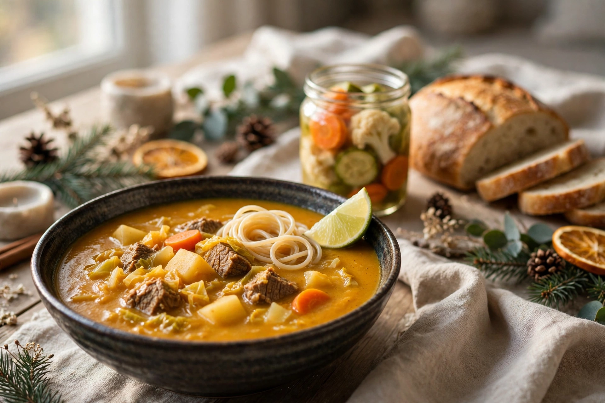
Telling people’s stories through food — dishes from fifty countries most people have never heard of, and the cultures they carry.
Tap the right edge, or use the arrows below, to turn the page.
Welcome
Tap the arrows below, tap the left or right edge of a page, swipe, or use your keyboard’s arrow keys.
First, The Story — the people, the history, the festival or tradition behind the food. Then, The Recipe, with a photo and full instructions.
Each recipe lists servings, prep and cook times, ingredients in US measures, and step-by-step instructions. Where an ingredient is hard to find outside its home country, a substitute is given.
Each story page notes what the main ingredients bring to the table. These are general food facts, not medical advice.
Fifty dishes, fifty countries: from steamed fish parcels on the Mekong to a feast buried in the earth of the Andes — every dish a story, every recipe ready to cook at home.
Belize · The Americas · Dish 1 of 50
The Garifuna dish of plantain and coconut — two foods in one bowl.
Hudut is two things in one bowl. Hudut itself is the mashed plantain — green and ripe plantains boiled and pounded in a wooden mortar (a mata) into a dense, smooth ball, sometimes called fu-fu. Sere is the stew poured over or beside it: fresh fish simmered in coconut milk with okra, onion, garlic, basil, oregano, and hot pepper.
The dish is the Garifuna story in edible form. The Garifuna formed on the island of St. Vincent (which they called Yurumein) from Kalinago and Arawak peoples and Africans who arrived by shipwreck or by escaping slavery. In 1797 the British deported them, first to Jamaica and then to Roatán, off Honduras; from there they spread along the Central American Caribbean coast, arriving in Belize in the early 1800s (the landing most often dated to 1832).
Every year on 19 November, Garifuna Settlement Day — a public holiday in Belize created in 1941 by activist Thomas Vincent Ramos — hudut is on tables across the south, with drums playing. The two pillars of Garifuna cooking are green plantains and coconut milk, and hudut is their purest expression: coastal food, patient food. The coconut is still often grated by hand and the milk squeezed through cloth; the plantains are pounded, never blended. Traditionally the fish is eaten with the hands, pinching off pieces of the plantain ball and dipping them into the coconut broth.
In 2001, Garifuna language, music, and dance were recognised by UNESCO as a Masterpiece of the Oral and Intangible Heritage of Humanity. Hudut is a festival and family dish, served at gatherings in Dangriga, Hopkins, Seine Bight, and Punta Gorda — but it is also everyday food along the coast, made with whatever fish came in that day.
General food information, not medical advice.
Belize · The Recipe
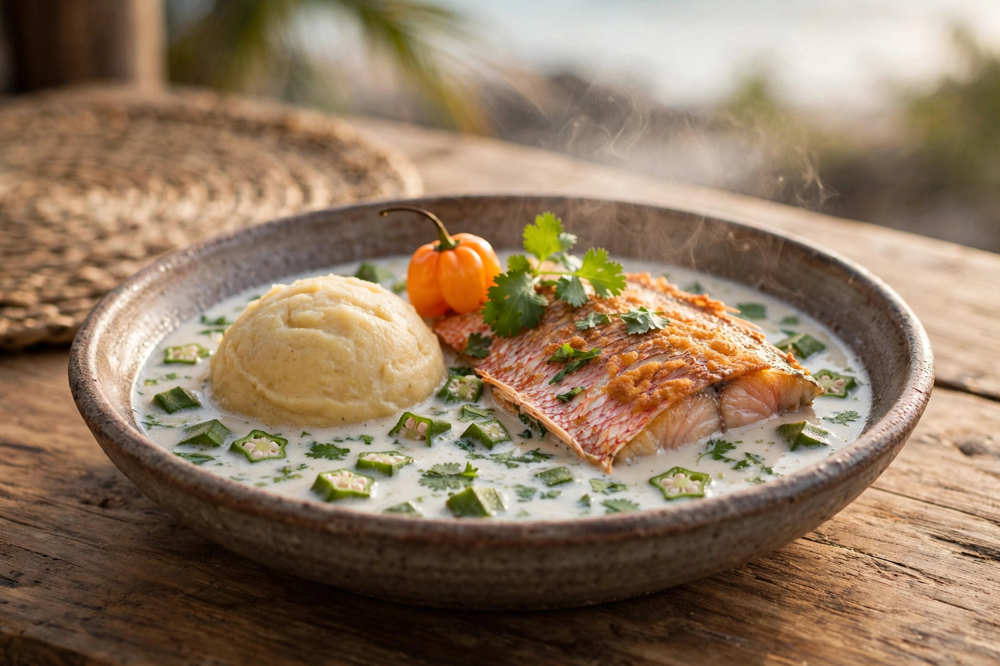
Guyana · The Americas · Dish 2 of 50
Guyana’s national dish — the pot that never empties.
Pepperpot is Guyana’s national dish and one of the oldest continuously cooked recipes in the Americas. It is a dark, slow-cooked meat stew whose soul is cassareep — a thick, molasses-like syrup made from the juice of bitter cassava root. Bitter cassava contains cyanogenic compounds that are poisonous raw; the Indigenous peoples learned to grate the root, press out the juice, and boil it down with spices until it became safe — and in the process they discovered it acts as a natural preservative.
In the tropical heat, where fresh meat spoiled within hours, a pot of pepperpot could be kept going for days, weeks, even years: the pot was never emptied, just topped up with new meat and cassareep, growing richer the longer it ran. That “perpetual pot” is one of the oldest continuous culinary practices in the hemisphere. Enslaved Africans brought bold spice traditions; Europeans introduced beef, pork, and spices like clove, cinnamon, and nutmeg.
Today pepperpot is the sacred centrepiece of Christmas morning: it is started on Christmas Eve night, simmered overnight, and eaten early on Christmas Day with thick slices of homemade bread to soak up the dark gravy. The same ritual is kept by Guyanese families in Canada, the United States, the United Kingdom, and across the Caribbean. Cassareep is non-negotiable — molasses or browning sauce will not do; the chemistry and flavour are different. The hot pepper (wiri wiri or Scotch bonnet) is kept whole in the pot so it perfumes the stew without making it fiercely hot — if it bursts, the heat jumps dramatically.
General food information, not medical advice.
Guyana · The Recipe
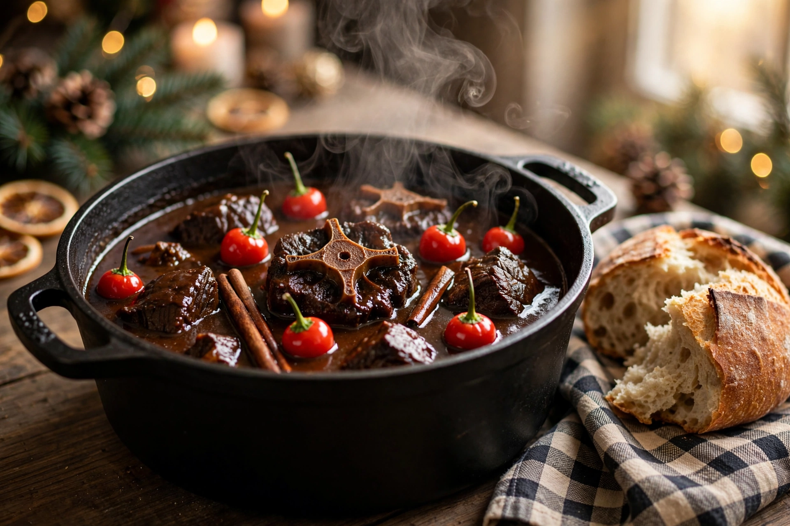
Paraguay · The Americas · Dish 3 of 50
The soup that is not a soup — Paraguay’s golden cornbread.
Sopa paraguaya is the great joke of Paraguayan cooking: despite its name — sopa means “soup” — it is not a soup at all. It is a dense, moist, savoury cornbread, golden on top, made with fine cornmeal, slow-softened onions, fresh cheese, eggs, and milk, baked in the tatakua, the domed clay oven found in Paraguayan backyards.
The story every Paraguayan knows says it was invented by accident. President Carlos Antonio López, who ruled Paraguay from 1841 to 1862, loved a thick white soup called tykuetĩ, made of milk, cheese, eggs, and corn flour. One day his cook — the machú — added far too much corn flour. With no time to start again, she poured the thick mixture into an iron pan and baked it. The president loved the result so much he named it “sopa paraguaya.” Historians treat that tale as legend — a 1931 Paraguayan cookbook already tells it — but the real roots go deeper: the Guaraní were baking breads and cakes of corn and cassava (mbujapé), wrapped in leaves and cooked in hot ashes, long before the Spanish arrived.
When the Spanish brought cattle to Asunción in the 1550s, those corn breads gained milk, cheese, eggs, and animal fat. Another theory holds that the Spanish simply called the Guaraní’s thick corn mashes “sopa,” and the name stuck to the baked version. Whatever the truth, sopa paraguaya is now one of Paraguay’s national dishes, and in 2017 the National Secretariat of Culture declared it, together with vori vori, locro, and jopara, part of the country’s intangible cultural heritage. It is a staple at family gatherings, festivals, and Sunday asado (barbecue) tables, eaten warm from the oven, cut into squares, alongside grilled meat — never as a soup, and never with a spoon.
General food information, not medical advice.
Paraguay · The Recipe
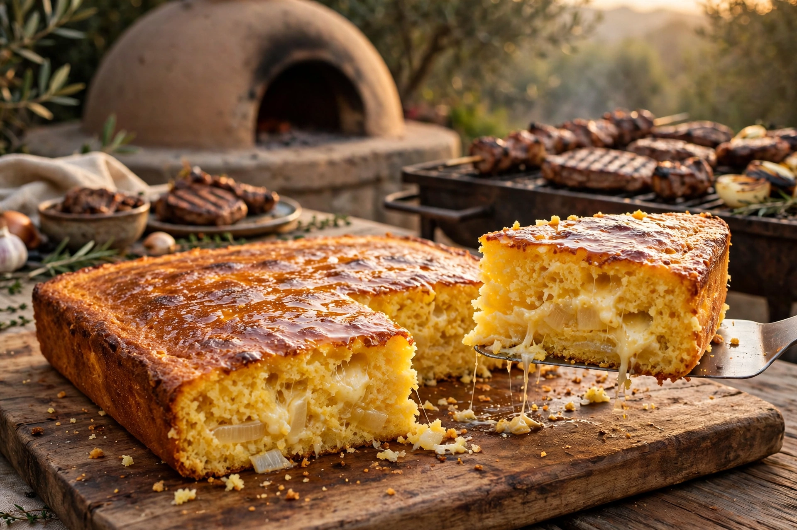
Bolivia · The Americas · Dish 4 of 50
A plate the size of a dinner tray, from Bolivia’s food capital.
Silpancho is a plate the size of a dinner tray, built in layers from the bottom up: a generous bed of white rice, slices of boiled-then-fried potato, a breaded beef cutlet pounded so thin it drapes over the whole plate, a fried egg (or two) with a runny yolk, and a fresh salsa of tomato, onion, and locoto chile called sarza. The name comes from the Quechua word sillp’anchu — “flattened and thin” — which is exactly what happens to the meat.
Cochabambinos also tell a cheerful origin story: the cook who made the dish famous used to hand a plate to a regular customer named Pancho and say, “Here’s your sillpa, Pancho.” Sillpa plus Pancho became silpancho. Before its modern form, the dish was simply called bistec (from the English “beef steak”) and was served without the rice and egg.
The plate as it is known today is credited to Celia la Fuente Peredo (1924–2008), a Cochabamba cook whom the department of Cochabamba officially recognises as its creator; she received the Medal of Merit in 2000 and a bicentennial medal in 2010. From her kitchen, silpancho spread across the city — whole restaurants in Cochabamba serve nothing else — and then across the country. In 2014 it was named one of the candidates for Bolivia’s plato bandera, or flagship national dish. The layering tells the history of the valleys: potatoes are native to the Andes, while rice, wheat, and the breaded cutlet arrived with the Spanish. It has a famous street-food offspring, the trancapecho: the entire silpancho — rice, egg, and all — stuffed into a bread roll. It is a lunch dish, a working-person’s feast, eaten with a knife and fork and a cold drink, the runny yolk mixed into the rice.
General food information, not medical advice.
Bolivia · The Recipe
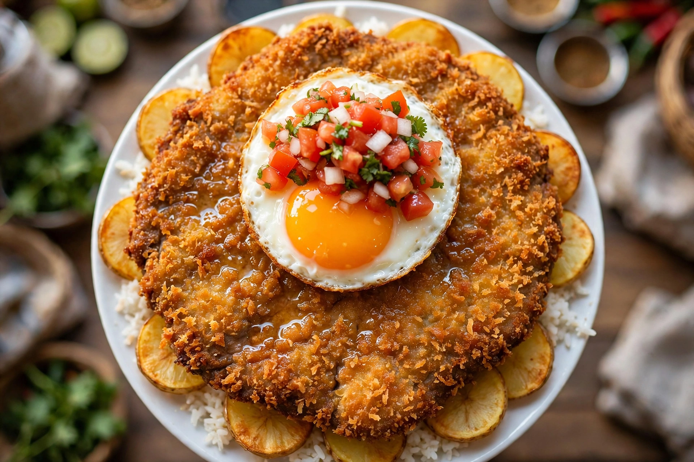
Suriname · The Americas · Dish 5 of 50
A golden casserole born in plantation kitchens — Suriname’s festive dish.
Pom is Suriname’s most loved festive dish: a golden baked casserole of chicken layered between two layers of grated pomtajer root, sharpened with citrus juice.
Its story begins in the 1600s, when Portuguese and Spanish Jews fleeing the Inquisition settled in Suriname and built sugar plantations around Jodensavanne — “Jewish Savannah.” By the 1730s they owned roughly a quarter of the country’s plantations. In their kitchens they wanted to recreate a European potato oven dish — the name is thought to come from pomme de terre, French for potato — probably as a Sabbath dish. But potatoes did not grow in Suriname’s tropical soil and had to be imported, so the Afro-Surinamese cooks who staffed the kitchens suggested pomtajer, the root of the arrowleaf elephant ear plant (Xanthosoma sagittifolium), a starchy indigenous root.
The result was a dish only wealthy people could have invented — chicken has always been a Sabbath food, and only plantation owners had home ovens — yet it was created by the hands of enslaved and Indigenous cooks, mixing Jewish and African Creole knowledge. The first published description appears in the Encyclopaedie van Nederlandsch West-Indië (1914–1917): grated tajer treated with bitter orange juice, baked with chicken or fish into a pie.
Over the centuries every community in Suriname added its touch: piccalilli from Hindustani cooks, soy sauce from Javanese kitchens, ginger from Chinese households, salted beef from the Creoles. Today pom is the dish of birthdays, holidays, and Sunday dinners, in Suriname and in the large Surinamese community in the Netherlands — and it is recognised as part of Suriname’s cultural heritage. It is a dish that belongs to everyone and to no one community in particular, which is exactly what Suriname is.
General food information, not medical advice.
Suriname · The Recipe
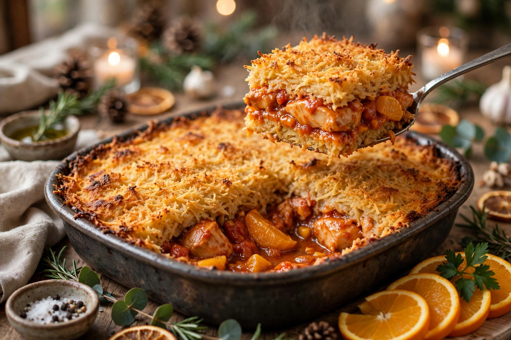
Haiti · The Americas · Dish 6 of 50
The soup of freedom — Haiti’s first meal of every year.
Soup joumou is not just a soup; it is Haiti’s freedom in a bowl. It is a hearty pumpkin soup made with beef, root vegetables, cabbage and pasta, built on giraumon — a dense, deep-orange Caribbean squash once cultivated by the Indigenous peoples of the Caribbean.
Under French colonial rule in the 1600s and 1700s, enslaved Africans were forced to grow the squash and prepare the soup for the plantation owners, and family tradition holds that they were forbidden to eat it themselves. Historians treat that specific prohibition as oral tradition rather than documented law — but what is not in doubt is what happened next.
On 1 January 1804, Haiti declared independence from France after the only successful large-scale slave revolt in modern history, becoming the first free Black republic. Legend holds that Jean-Jacques Dessalines, the revolutionary leader and first emperor, ordered his wife Marie-Claire Heureuse Félicité Bonheur Dessalines to serve the soup to the newly freed people all day — and Haitians have eaten it on 1 January ever since, as the first meal of the year, often for breakfast, lunch and dinner, spilling into 2 January, Ancestry Day, which honours the revolutionaries.
In December 2021, UNESCO inscribed soup joumou on the Representative List of the Intangible Cultural Heritage of Humanity — Haiti’s first inclusion. It is made in every Haitian home and in diaspora kitchens from Montreal to Miami, and it is always shared: neighbours, passers-by, anyone who knocks is given a bowl.
General food information, not medical advice.
Haiti · The Recipe
Grenada · The Americas · Dish 7 of 50
Grenada’s national dish — a one-pot history lesson.
Oil down is Grenada’s national dish, and it is a one-pot history lesson. Every ingredient in the pot comes from a different chapter of the island’s past.
Callaloo — a leafy green like spinach — and its root, dasheen, were cultivated by Grenada’s earliest Amerindian inhabitants. Bananas came from Asia in the 1500s with European explorers. Enslaved West Africans, brought to work the sugarcane fields, brought the tradition of the one-pot meal. Pig snouts and tails were scraps from the plantation master’s house; salted cod, imported from Canada, was meant as cheap food for the enslaved. Breadfruit — the starchy fruit famously tied to the 1789 Mutiny on the Bounty — arrived from the South Pacific on a later expedition led by Captain William Bligh, again as cheap food for enslaved workers. Decades later, turmeric — known locally, confusingly, as “saffron” — was introduced by South Asian immigrants who came to fill the labour gap after emancipation in the 1830s.
The name comes from the cooking itself: everything simmers in seasoned coconut milk until the liquid is absorbed and the natural coconut oil “cooks down” and settles at the bottom of the pot, coating the dish in a rich, golden slick. Grenadians proudly note that the colours of the finished pot match the flag: green for callaloo, red for carrots, gold for the turmeric.
It is a social dish — “Oil down is a social thing,” says Simeon Cornwall, a television producer who researched the dish for Grenada’s National Museum — a staple at family tables, at special gatherings, during the annual Carnival, or simply as a weekend feast. The rule of the pot is patience: once the coconut milk goes in, you do not stir. You let it simmer, untouched, until the oil separates.
General food information, not medical advice.
Grenada · The Recipe
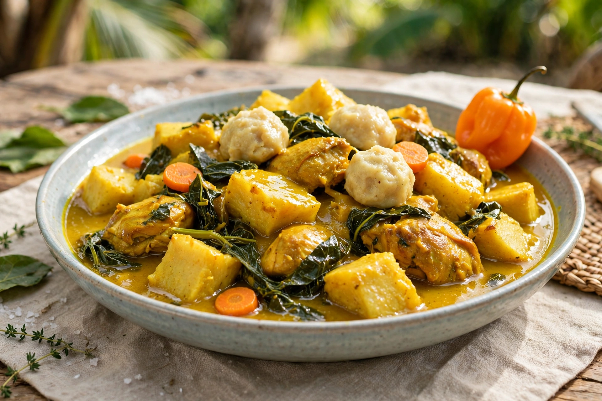
Guatemala · The Americas · Dish 8 of 50
The red turkey soup of the Q’eqchi’ Maya — older than Guatemala itself.
Kak’ik is a red turkey soup that is older than Guatemala itself. Its name is Q’eqchi’: kaq means red, ik means chile or hot. The red comes from achiote (annatto seed) and dried chiles; the heat comes from chile cobanero, named for Cobán, where it is mainly grown. The turkey is the chompipe, the native turkey the Maya domesticated and held sacred long before Spanish contact — so the dish’s core combination of turkey, chiles, herbs, and achiote is genuinely pre-Hispanic.
The red colour is said to recall the blood of pre-Columbian ritual sacrifices, and the soup still carries a ceremonial place: it is among the dishes prepared for the Paabanc, a festivity of the Q’eqchi’ Maya people. The herbs are the soul of the flavour: zamat (also called samat) — culantro, a stronger, long-leaved cousin of cilantro — together with fresh mint and cilantro.
On 7 November 2007, Guatemala declared kak’ik part of the nation’s Intangible Cultural Heritage, together with jocón, pepián, and plátanos en mole — a national designation, not a UNESCO listing. In Cobán, where the tradition runs deepest, kak’ik is on almost every restaurant menu, served with rice and small white corn tamales on the side, and a pinch of dried cobanero pepper for those who want more heat. Women traditionally prepare the dish, and the old Cobán rule is firm: no potatoes, no squash, nothing extra in the pot — turkey, recado, and herbs, nothing else.
General food information, not medical advice.
Guatemala · The Recipe
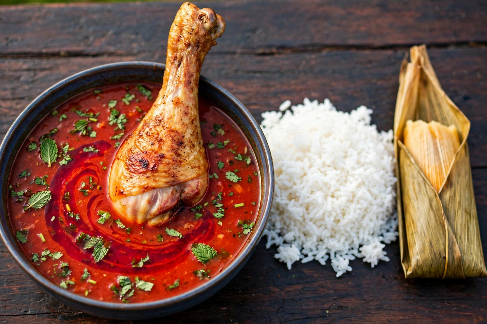
Nicaragua · The Americas · Dish 9 of 50
The Caribbean coast’s communal feast — whatever the day’s catch “runs down.”
Nicaragua has two coasts and two completely different kitchens. The Pacific side looks toward Mexico and Spain; the Caribbean coast — the old Mosquito Coast, a British protectorate rather than a Spanish colony — looks toward Jamaica and Belize. Its pantry is coconut milk, seafood, and root vegetables, and its emblem is rondón.
The name is English Creole: from “run down.” It is explained two ways, and both are true — the coconut milk cooks down until thick, and the cook uses whatever could be “run down,” caught or found, that day. The dish began in Jamaica, where it is also called rundown or run dun, and travelled across the Caribbean with Afro-Jamaican migrant workers in the 19th century, who built the Panama Canal and the Costa Rican railroads and settled the Atlantic coast.
On Nicaragua’s coast it became the communal feast of the Creole and Miskito peoples: families and neighbours gather around a pot filled with the day’s catch — fish, shrimp, lobster, crab, conch — simmered slowly in coconut milk with cassava, breadfruit, green plantain, dasheen, and herbs until everything “runs down” into a thick stew. Bluefields’ famous version uses chacalines, tiny seabob shrimp caught in Pearl Lagoon. Traditionally the pot could also include turtle meat; today cooks deliberately leave turtle out, because sea turtles are endangered, and use fish and shellfish instead.
Rondón is sold by the bowl at street stalls in Bluefields, especially during Palo de Mayo, the May Pole festival of the Caribbean coast, and it is the centrepiece of Corn Island’s Crab Soup Festival each August, which celebrates emancipation from slavery with exactly this coconut-based cooking. It is served with pan de coco (coconut bread rolls) and tostones (fried green plantain), eaten slowly, with the fingers, from a shared pot.
General food information, not medical advice.
Nicaragua · The Recipe
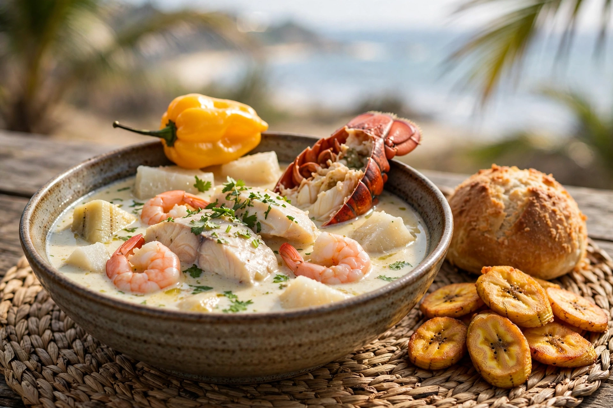
Peru · The Americas · Dish 10 of 50
A feast you dig — the “earth pot” of the Andes.
Pachamanca is not a dish you cook; it is a feast you dig. The name is Quechua: pacha means earth, manka means pot — the “earth pot.” Heated stones are buried in a pit in the ground, layered with herb-marinated meats, native potatoes, corn, and beans, covered with leaves and earth, and left to cook in their own steam.
It is one of the oldest cooking methods still in use anywhere: comparable earth-oven practices at Telarmachay in the Andes are dated to roughly 7,000–8,000 years ago, long before the Inca Empire, and the Inca tied the feast to harvest festivals and celebrations of unity and abundance. The meal is an offering and a thanksgiving to Pachamama, Mother Earth — the food is buried in her, cooked by her stones, and returned to the people.
It is prepared communally for festivals, weddings, harvests, and family gatherings: one group heats the stones for two or three hours, another marinates the meats overnight in garlic, cumin, ají peppers, and the Andean herbs huacatay (black mint) and chincho, another digs the pit. When the earth is finally opened, the aroma rises all at once and everyone eats together. In 2003, Peru’s Ministry of Culture declared pachamanca Cultural Heritage of the Nation. It is also eaten across the Andes in Ecuador and Bolivia. The recipe below adapts the feast for a home oven, keeping the marinade, the layering, and the banana leaves — and notes the traditional earth-oven method so the reader knows what the real thing is.
Traditional pachamanca marinades often include beer (about 1 cup of blonde beer) or chicha de jora, a fermented corn beer. This recipe lists beer as optional and gives a non-alcoholic swap, so the dish can be made without any alcohol.
General food information, not medical advice.
Peru · The Recipe
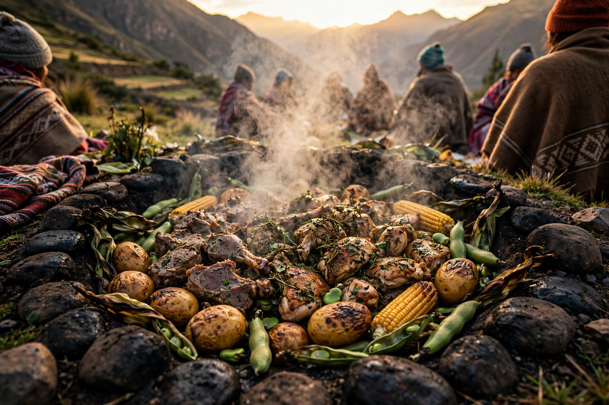
Laos · Asia · Dish 11 of 50
Fish steamed in banana leaf — the Mekong fisherman’s lunch.
Mok means food wrapped in banana leaf and steamed; pa means fish. Mok pa is fish mixed with masses of fresh dill, spring onion, lemongrass, galangal and chilli, seasoned with padaek — the thick, long-fermented Lao fish sauce that is the backbone of Lao cooking — then folded into banana-leaf parcels tied with bamboo strips and steamed.
Banana-leaf steaming is a pre-colonial technique from a time when pots were scarce: the leaf is nature’s parchment, trapping every drop of juice and adding a faint grassy perfume. Historically it was the Mekong fisherman’s lunch — fresh-caught fish wrapped with foraged herbs and steamed over a small charcoal fire on the riverbank.
Today it is the centrepiece of family meals at Pi Mai, the Lao New Year in April, and the most-ordered dish at Luang Prabang’s night-market stalls. Lao food is built on sharing: mok pa arrives on a platter, the leaves still intact, and everyone opens their own parcel at the table. It is eaten with khao niao (sticky rice), pinched into a small ball by hand and used to scoop up the fish.
What makes the Lao version different from its Thai and Cambodian cousins is the dill — Lao cooks use it by the handful — and the funky depth of padaek instead of the lighter Thai fish sauce.
General food information, not medical advice.
Laos · The Recipe
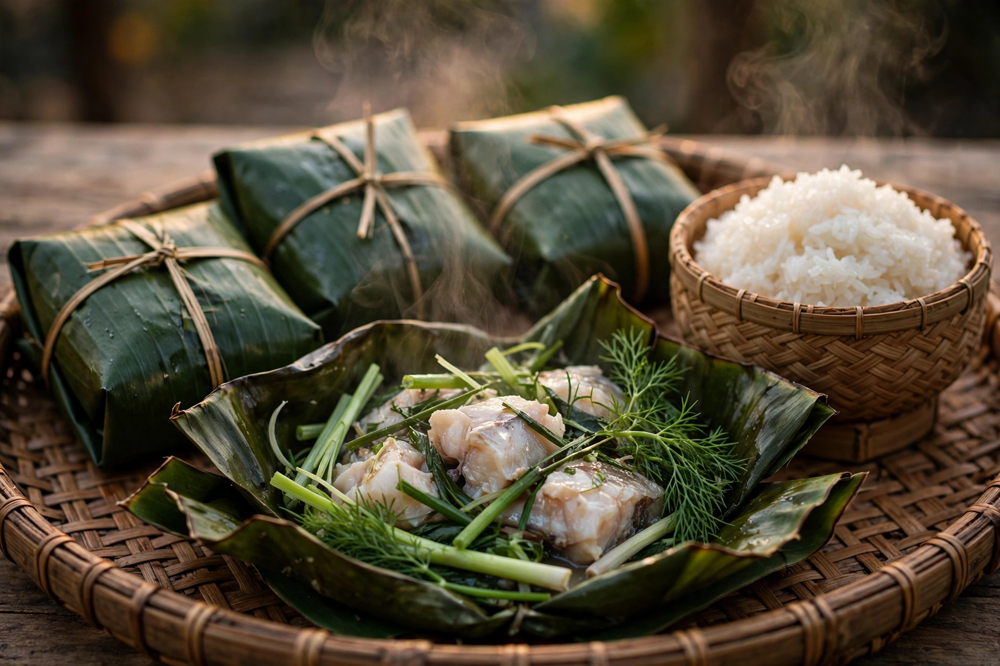
Bhutan · Asia · Dish 12 of 50
The chilli is the meal — Bhutan’s national dish.
Ema means chilli and datshi means cheese in Dzongkha, Bhutan’s official language — and the name is literal: this is a stew in which chillies are the vegetable, not the seasoning. That is the first shock for outsiders. In most of the world chillies are a pinch of heat; in Bhutan they are the main ingredient, stewed in a creamy sauce of homemade datshi, a soft, tangy cheese made from cow’s or yak’s milk curd.
The precise origins are not documented, but the dish grew out of two things the Himalayan valleys had in abundance: dairy cattle kept by pastoral communities, and chillies, which arrived from the Americas via Portuguese trade routes in the 16th and 17th centuries and spread through India into the Himalayas. Before chillies, Bhutanese cooks seasoned food with a native herb called namda and with Sichuan pepper.
By the 18th and 19th centuries, chillies were so central to the Bhutanese diet that early European visitors wrote home in astonishment at the quantities eaten. One popular telling credits Buddhist monks with creating the dish — a spicy, warming meal to withstand the harsh mountain climate — but that is legend, not record.
What is certain is the chilli’s place in Bhutanese life: parents introduce children to chillies from a young age, chillies are burned to ward off bad spirits and ill omens from houses, and dried red chillies hang from the windows of homes to dry in the sun. Ema datshi is eaten daily, with red rice, in homes and restaurants across the country, and it unified a kingdom: before Bhutan was united in the early 1600s, its scattered communities shared little — except, as one Bhutanese writer put it, their love of ema datshi.
General food information, not medical advice.
Bhutan · The Recipe
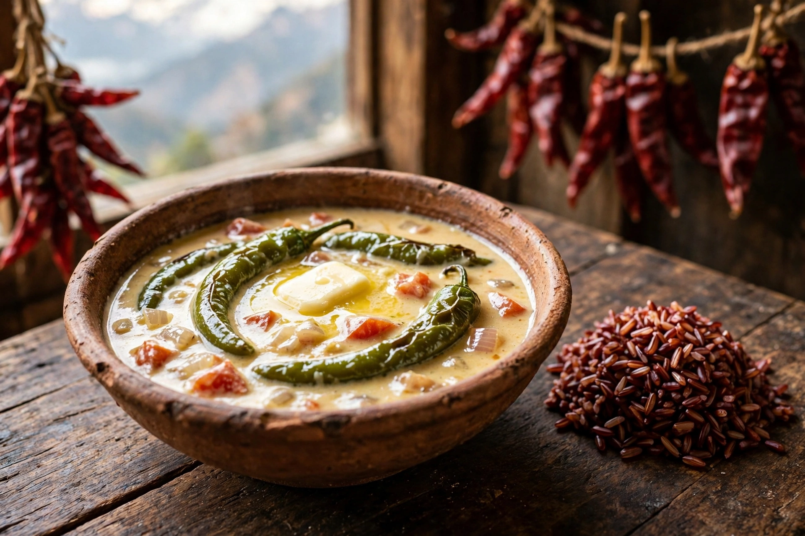
Mongolia · Asia · Dish 13 of 50
Hand-pleated dumplings for the Lunar New Year.
Buuz are hand-pleated steamed dumplings filled with coarsely minced mutton or beef, onion, garlic and salt. The name comes from baozi, the Chinese steamed bun, but the filling is pure Mongolian herding food: fatty mutton, onion and garlic, nothing more.
Mongolian cooking centres on meat and milk from the family herd, with very few vegetables, and buuz is its most beloved expression. The dumpling’s true home is Tsagaan Sar, the Mongolian Lunar New Year, usually in late January or February — the most important holiday in the Mongolian calendar.
In the weeks before, families gather to make buuz by the hundreds, sometimes by the thousands — 1,000 to 2,000 in a single household is not unusual — and freeze them outside in the winter cold, ready to steam fresh as guests arrive. Over three days of celebration, relatives travel from house to house, and plates of freshly steamed buuz are brought out continuously. The number of dumplings a family makes is a visible measure of its hospitality and prosperity.
The Tsagaan Sar table is arranged with ceremony: a tall tower of ul boov (shoe-sole cookies) in the centre, surrounded by dairy products and sweets, and the formal zolgokh greeting, in which younger family members approach elders with outstretched arms to ask for a blessing. Buuz are eaten by hand, never with chopsticks, and each cook has a signature pleat — some pleat 8 times, some 14 — always leaving a small opening at the top so the steam can escape and the juices settle inside. They are served with suutei tsai, salty Mongolian milk tea.
General food information, not medical advice.
Mongolia · The Recipe
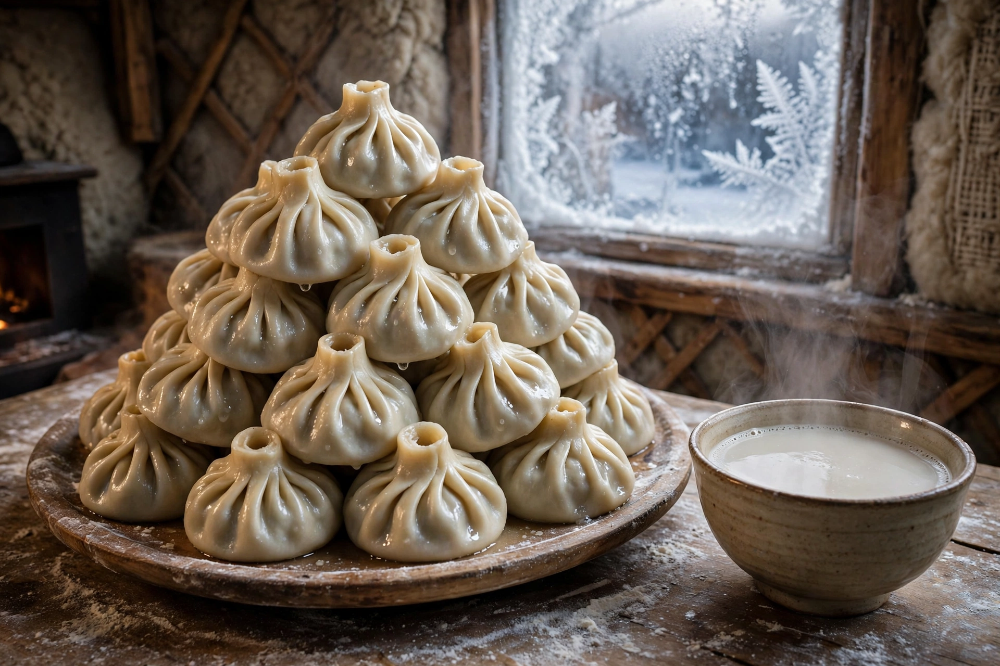
Myanmar · Asia · Dish 14 of 50
The salad you eat with tea — Myanmar’s national delicacy.
Myanmar is one of the only countries on earth where tea is eaten, not just drunk — and laphet thoke, the fermented tea-leaf salad, is its national delicacy. Laphet is young tea leaves that have been steamed, packed tight and left to ferment for weeks or months until they turn dark, soft, sour, salty and faintly bitter. The dressed leaves are tossed by hand (thoke means tossed salad) with shredded cabbage, tomato, chilli, fried garlic, roasted peanuts, toasted sesame, crunchy fried split peas and broad beans, and often dried shrimp, with lime and fish sauce.
The practice is extremely old: indigenous communities in the tea hills preserved leaves in bamboo tubes, baskets, plantain leaves and clay pots long before written records. Burmese folklore credits King Alaungsithu of the Pagan dynasty (12th century) with introducing tea to the country — the royal court had teacups and tea servers, though the king’s personal role is legend rather than established fact.
Laphet’s most remarkable role was diplomatic: for centuries it was a symbolic peace offering between warring kingdoms. Rival rulers exchanged and ate laphet after settling a dispute, and the custom carried into British colonial times, when eating laphet together after a court verdict marked formal acceptance of the judgement. When Theravada Buddhism tightened its hold in the 1500s and 1600s and public drinking became unacceptable at ceremonies, pickled tea became the celebratory substitute — stimulating and social, but not alcoholic.
At weddings and at shinbyu, the Buddhist ordination ceremony for boys becoming novice monks, no occasion is considered complete without it. For honoured guests, the ceremonial version, ahlu-laphet, is presented in a lacquerware tray with the tea in the centre and each crunchy topping in its own compartment — and refusing it is considered unfriendly. It is also eaten at Thadingyut, the festival of lights.
General food information, not medical advice.
Myanmar · The Recipe
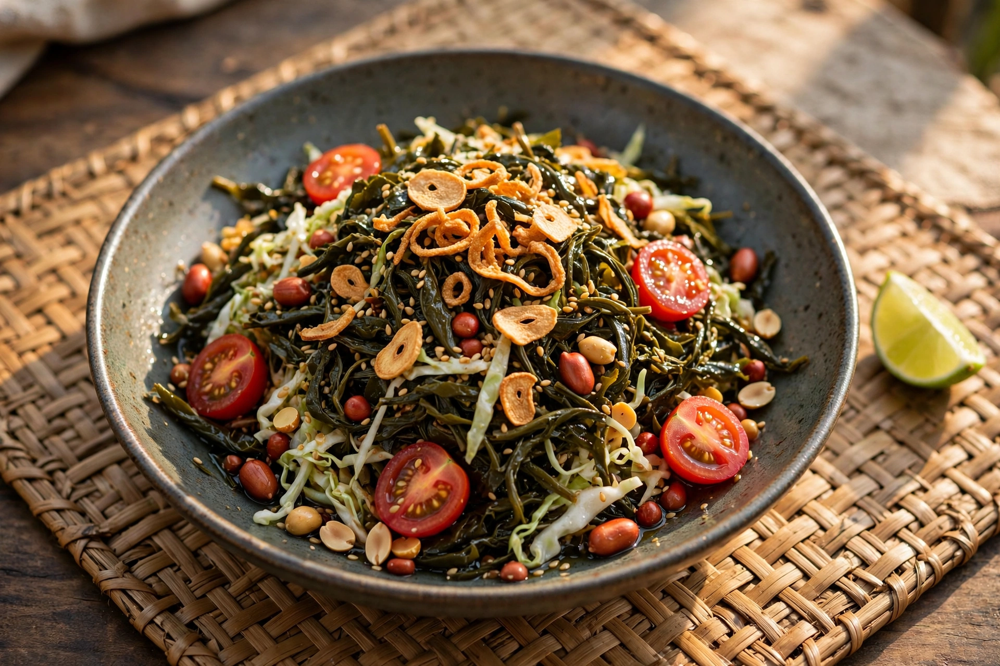
Nepal · Asia · Dish 15 of 50
A ring of sweet rice bread, crisp outside and soft inside.
Sel roti looks like a doughnut, but it is nothing of the sort: it is a ring of rice-flour batter, deep-fried until crisp outside and soft inside, faintly sweet and scented with cardamom. It is over 800 years old, according to Professor Dinesh Raj Panta of Nepal Sanskrit University, which makes it one of Nepal’s oldest recorded foods.
It probably began as a simple, unsweetened bread and grew sweeter and more fragrant as Nepal’s many ethnic groups added their own touches; food historians believe it evolved from babari, a rice pancake made from the same batter but cooked flat on a griddle — frying it into a ring made it keep longer, which mattered for festivals that last for days. The name is thought to come from sel, a variety of rice grown in Nepal’s foothills, or from saal, the Nepali word for year, since it was first a ceremonial bread for the Nepali New Year.
Sel roti is the food of Dashain and Tihar, Nepal’s two great Hindu festivals. During Tihar, the festival of lights, families make it in huge batches: the first rotis are offered in puja to Lakshmi, goddess of wealth and prosperity, and set aside for brothers on Bhai Tika, the day sisters honour their brothers. The ring itself is symbolic — prosperity, continuity, and the unbroken cycle of the year: what goes around comes around.
Making it is a family production line: rice soaked overnight, ground into a paste with sugar, ghee and milk, then poured by hand in a thin stream into hot oil, the cook’s fingers guiding the batter into a perfect ring. It is democratic food — eaten in labourers’ homes and in the former royal palace alike — and it keeps for days, so a batch made for Lakshmi Puja is still being eaten at Bhai Tika a week later. It is served with spicy aloo dum (potato curry) or eaten on its own, warm, with tea.
General food information, not medical advice.
Nepal · The Recipe
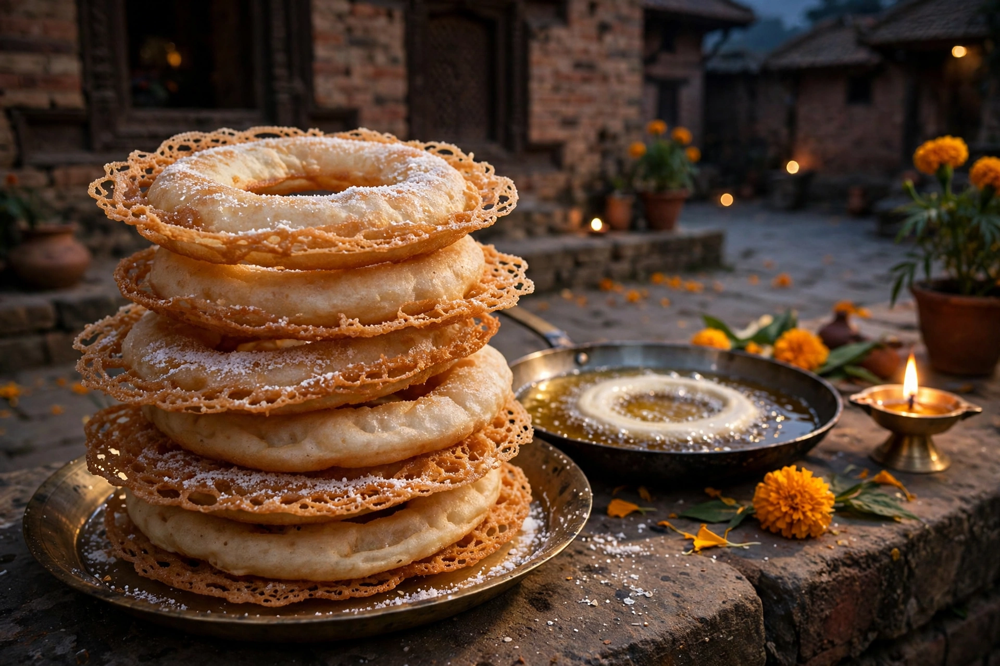
Sri Lanka · Asia · Dish 16 of 50
A whole feast folded into a banana leaf.
Lamprais is a complete meal folded into a banana leaf: rice cooked in meat stock, a dark three-meat curry, two spiced meatballs called frikkadels, a pickled aubergine relish, a spoonful of dried-prawn paste, and sweet onion sambol — all wrapped tight and baked until the leaf itself becomes part of the flavour.
Its name gives away its journey: lamprais is the English version of the Dutch lomprijst, loosely “a packet or lump of rice,” and food historians trace the format further back to lemper, a Javanese snack of seasoned meat wrapped in glutinous rice and banana leaf. The Dutch East India Company (VOC) ruled Sri Lanka’s coasts from 1658 to 1796, and its officials moved constantly between Batavia (modern Jakarta) and Colombo. Somewhere in that traffic, mixed-descent VOC families took the Javanese parcel and rebuilt it with what was on hand: black pepper, cinnamon, cloves, and cured bonito flakes from the Maldives.
The result was neither Dutch nor Indonesian nor Sinhalese — it was Burgher. The historian Deloraine Brohier, who wrote the only detailed study of Dutch Burgher cooking, put it bluntly: people in the Netherlands have no idea what a lamprais is, and never have. Lamprais was a Sunday speciality: the night before, the women of the extended family boiled shin and mixed meats for two hours and washed the plantain leaves to dry.
It was the social glue of a community whose numbers have shrunk from tens of thousands to a fraction of that — today the dish is, by most accounts, the community’s most visible legacy: not a language, a church or a surname, but a lunch. Its only serious written record is a 1929 cookbook, the Ceylon Daily News Cookery Book, and the Dutch Burgher Union of Ceylon, founded in Colombo in 1908, still serves it at its VOC Café. To eat it properly, you unwrap the parcel at the table and eat with your hands, mixing a little of everything into each mouthful.
General food information, not medical advice.
Sri Lanka · The Recipe
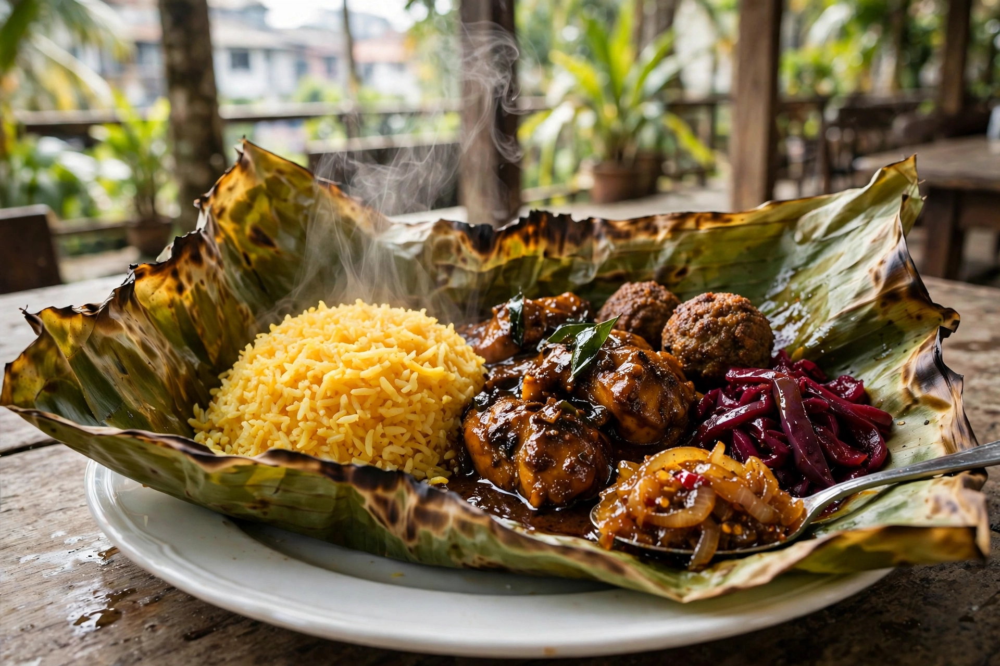
Cambodia · Asia · Dish 17 of 50
Fish custard in a leaf cup — Cambodia’s dish of survival.
Amok trey is Cambodia’s national dish, and it is also its story of survival. Trey means fish; amok means steamed in a banana leaf. Firm freshwater fish — traditionally snakehead from the Tonlé Sap, Southeast Asia’s great lake — is folded with kroeung, the lemongrass, galangal, turmeric and kaffir lime paste that is the soul of Khmer cooking, then enriched with coconut cream and egg and steamed in banana-leaf cups until it sets into something between a custard, a mousse and a soufflé, pale gold from the turmeric.
Older cooks say it began as a royal Khmer dish of the great empire that built Angkor Wat (9th–15th centuries), its refinement and slow preparation marking it as court food; others say it was simply the food of the lake people, who had the fish at their doorstep. Both may be true — farmers carried the firm, leaf-wrapped parcels out to the rice fields for lunch, while the same dish graced wedding feasts.
Then came the Khmer Rouge years, 1975–1979, when traditional cuisine was suppressed and nearly two million people died. Amok trey was almost lost with a generation of cooks. Its revival in the 1980s and 1990s became a symbol of Cambodian cultural recovery: relearning the old recipes was an act of remembering who they were.
Today it is the main dish of the Water Festival, which celebrates the Tonlé Sap reversing its flow and gives thanks to the Mekong for its fish and fertile soil. The traditional leaf lining the cup is nhor, the noni leaf, which gives the dish its distinctive flavour; spinach is the common substitute. It is served with jasmine rice, and the first spoonful should be eaten slowly — Cambodians say a good amok should be fragrant before it is even tasted.
General food information, not medical advice.
Cambodia · The Recipe
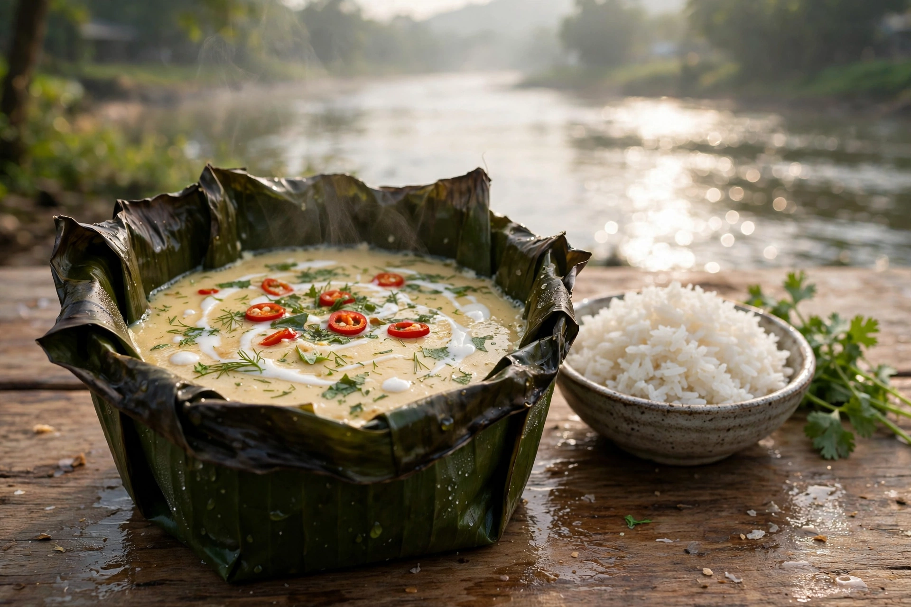
Brunei · Asia · Dish 18 of 50
Sago paste and a fiery sauce — Brunei’s national dish.
Ambuyat looks like a bowl of thick, translucent glue — and that is exactly the point. It is made from the starch of the sago palm (rumbia), which grows in Borneo’s wet, swampy lowlands. Harvesting it is a labour of knowledge: the palm is felled just before it flowers, when the starchy pith inside the trunk is at its richest, and the pith is washed and filtered until a fine white powder settles out.
Mixed with boiling water and beaten hard, the powder turns into a glossy, stretchy paste that is almost flavourless on its own — and that is why the sauce matters. The dipping sauce, cacah, is the heart of the dish: sour, spicy and salty, built on tamarind, lime, chilli, garlic and fermented shrimp paste, sometimes with tempoyak (fermented durian) for a funkier kick.
Ambuyat is eaten with candas (also spelled chandas) — a pair of bamboo sticks joined at the top. You twirl a small portion around the prongs, dip it into your own bowl of cacah, and swallow it, traditionally without chewing. It is served in one large shared bowl in the middle of the table, so everyone eats together — the meal is the conversation.
Sago has fed Borneo for centuries, but ambuyat became a national symbol during the Second World War: under Japanese occupation, rice became almost impossible to get, and Bruneian families turned to the sago palm to survive. What began as a food of hardship became a point of pride, and today ambuyat is Brunei’s national dish, the food a Bruneian offers a guest to say: this is who we are.
General food information, not medical advice.
Brunei · The Recipe
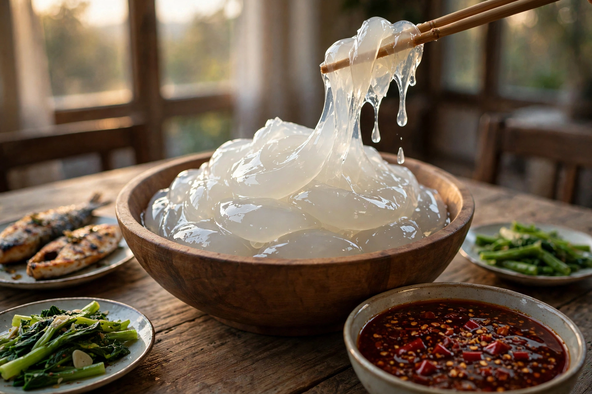
East Timor · Asia · Dish 19 of 50
Corn, mung beans and pumpkin — the taste of Timor-Leste.
Batar da’an means “boiled corn” in Tetum, one of East Timor’s two official languages. It is a slow-simmered stew of corn, mung beans and pumpkin, seasoned with garlic, onion and chilli, sometimes softened with coconut milk — and it is the most Timorese dish there is.
Maize came to Timor with the Portuguese from the Americas in the 16th and 17th centuries and quickly displaced millet as the national staple; today it is grown on small rain-fed hillside plots, and rice is reserved for lowland paddies, feast days and town tables. Most Timorese outside the capital eat batar da’an every day.
It is peasant cooking of a nutritionally clever kind: corn supplies the calories, mung beans supply the lysine — the amino acid corn lacks — and pumpkin adds vitamin A, so the three together make a complete protein without any meat at all. The pot sits at the back of the hearth all morning because the corn and beans need long, slow cooking, and every district has its own version: some add cassava leaves or papaya, others thicken it with grated coconut, coastal families stir in dried mackerel. It is usually eaten with rice and with ai manas, the fiery Timorese chilli paste that sits beside almost every meal.
Batar da’an’s rise as a national symbol is recent and deliberate: after centuries of Portuguese colonisation, a brief independence in 1975, and Indonesian occupation until 1999, the young nation that emerged in 2002 reached for its own food as a statement of identity. There is no officially designated national dish of Timor-Leste — but ask a Timorese what food is theirs, and this is the answer.
General food information, not medical advice.
East Timor · The Recipe
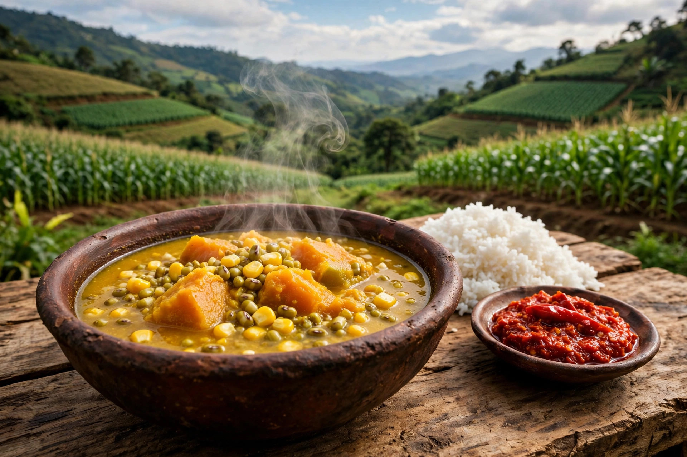
Kyrgyzstan · Asia · Dish 20 of 50
Five fingers — the feast of the Kyrgyz steppe.
Beshbarmak means “five fingers,” because this is a dish eaten with the hand. It is the ceremonial heart of Kyrgyz cooking: whole cuts of meat — traditionally horse, the most prestigious, or mutton, lamb or beef — boiled for hours in a great cauldron (kazan) until tender, then chopped and laid over wide, flat hand-rolled noodles, with a rich onion broth sauce (chyk) poured over the top. The broth itself is served separately in bowls and drunk during the meal.
The dish is the nomadic life in edible form: on the treeless steppe, fuel for roasting was scarce, so boiling in the cauldron was the practical way to cook — and boiling saved the broth, which is food in its own right. The meal is served on the dastarkhan, the low communal table, and everyone eats from the same great platter. How the meat is divided matters: the head of the sheep and the honoured cuts go to honoured guests and elders, a whole system of respect served on a plate.
Beshbarmak is the centrepiece of weddings, funerals, the birth of a child, and the great festivals — Nauryz, the Turkic New Year, and Eid al-Adha, when large cuts of horse meat are boiled for hours and the dish’s symbolism of wealth, generosity and hospitality matters most. Its status as the national dish was fixed in the Soviet era, when the new Central Asian republics’ cuisines were written down in official cookbooks; after independence in 1991 it became a symbol of Kyrgyz identity all over again — in 2018, Kyrgyzstan set a world record by cooking a beshbarmak weighing over 1.5 tons in Bishkek.
For a people who measured their wealth in livestock and used every part of the animals that fed them, beshbarmak is not just dinner. It is the steppe, the herd, the family and the guest, on one platter.
General food information, not medical advice.
Kyrgyzstan · The Recipe
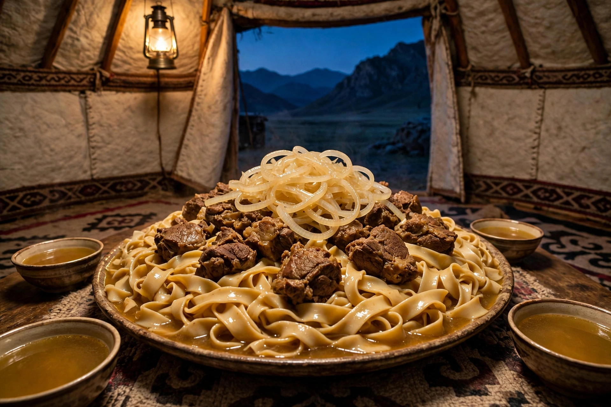
Uganda · Africa · Dish 21 of 50
A royal parcel, steamed in banana leaves — the dish of the Buganda king.
Luwombo is a royal dish with a birth date. Tradition credits its invention to 1887, when Kawuuta — spelled Kawula in some accounts — the personal chef of Kabaka Mwanga II of Buganda, first steamed meat inside smoked banana leaves and served it to the king. For years only the kabaka’s household and favoured chiefs ate it — steaming food in sealed leaf parcels took skill, time and good ingredients, and that made it a sign of high status. Over the 20th century it spread from the palace into ordinary Baganda homes, but it never lost its ceremonial rank.
Today luwombo is the centrepiece of Buganda’s biggest celebrations: the kwanjula — the traditional introduction ceremony where a bride formally presents her groom to her family — weddings, Christmas and other important occasions. Each guest is given their own parcel to open, which makes the dish a symbol of hospitality and honour — unwrapping the leaves to reveal the stew inside is itself a ritual moment, the parcel presented like a gift. Traditionally the women of the family prepare the sauce and meats, and the house elder — often a grandmother — assembles the wraps, passing the knowledge down.
The technique is the heart of it: young banana leaves are passed briefly over a flame until they turn soft, pliable and smoky, then folded around chicken — or beef, goat, fish or mushrooms — mixed with ebinyebwa, the groundnut sauce that is the most important sauce in Ugandan cooking. The sealed parcels are set on top of steaming matooke — green cooking bananas — so the meat cooks slowly in its own pouch, picking up the leaf’s aroma. Luwombo is eaten with the hands or a spoon, scooped up with matooke, rice or sweet potatoes.
General food information, not medical advice.
Uganda · The Recipe
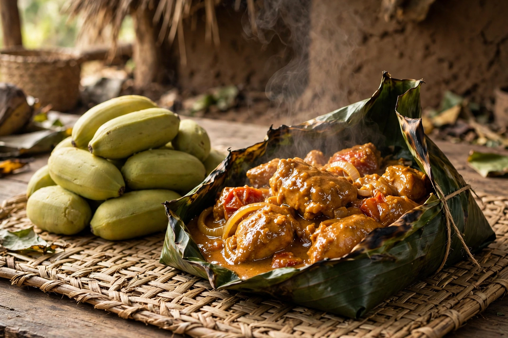
Mozambique · Africa · Dish 22 of 50
Mozambique’s national dish — cassava leaves, peanuts and coconut, pounded together.
Matapa is Mozambique’s national dish, and it is the country’s past and present stirred together in one pot. Its roots are with the Makua people, one of the largest ethnic groups in Mozambique, who have cooked versions of it for generations — long before borders were drawn, long before kitchens had electricity. The dish is a map of Mozambique’s history: cassava and peanuts came from South America through Portuguese trade routes from the 16th century; coconut milk comes from the Indian Ocean coast, especially Inhambane, the country’s main coconut region; and the pounding of leaves in a tall wooden mortar — the pilão — is an old African technique. Indigenous tradition, Indian Ocean trade and Portuguese echoes, absorbed and re-imagined until the result is unmistakably Mozambican.
Making it is communal work. The tender young cassava leaves are pounded in the pilão, often by two women taking turns with the heavy pestle. The leaves are then simmered long with garlic, onion, ground peanuts and coconut milk until they turn from tough and fibrous to tender and green. Coastal cooks add crab — matapa de caranguejo — or shrimp; inland versions use more peanut and sometimes no coconut.
Matapa is everyday home food and also a dish for weddings, festivals, homecomings and Independence Day celebrations — a symbol of unity and togetherness, and a taste of home for Mozambicans abroad. It is usually served with white rice or xima, maize porridge.
General food information, not medical advice.
Mozambique · The Recipe
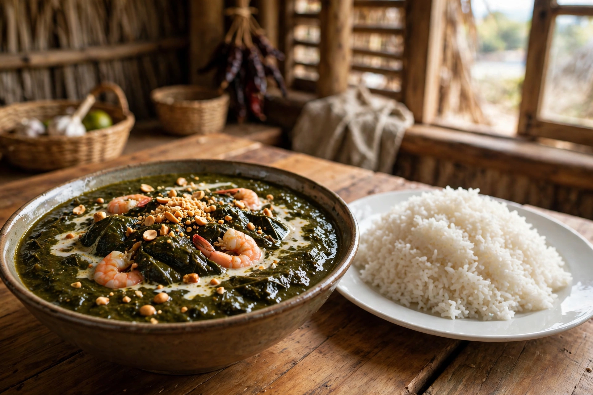
Madagascar · Africa · Dish 23 of 50
The clear broth — Madagascar’s national dish, from the Merina royal court.
Romazava is the national dish of Madagascar, and its name tells you what it is: ro — broth — plus mazava — clear — a “clear broth”. The dish sits exactly at the crossroads of the island’s settlement history. Austronesian seafarers from the region of Borneo crossed the Indian Ocean roughly 1,200–1,500 years ago, bringing rice cultivation and a rice-and-soup way of eating. Later Bantu arrivals from East Africa brought zebu cattle and leafy greens. Arab, Indian and French traders layered in ginger, tomato and colonial-era technique. Romazava is an Austronesian rice-and-soup format filled with African cattle and endemic herbs.
Historically it was associated with the Merina royal court of the central Highlands, where it was served at ceremonial meals — it is one of the hanimpitoloha, the seven royal dishes. Today it is eaten everywhere, from Antananarivo’s hotely — roadside eateries — to family homes, and it is the definitive taste of the island for visitors.
The meat is zebu — the humped cattle that are Madagascar’s living currency, a symbol of wealth, status and connection with the ancestors; the island has roughly as many cattle as people. A classic romazava often simmers several meats together: zebu beef, pork belly, sometimes chicken. The defining green is brèdes mafana — paracress, also called the toothache plant or buzz button — whose leaves and yellow buds make the mouth tingle and go slightly numb — no other dish tastes quite like it. Romazava is a laoka, an accompaniment eaten with vary — rice — which anchors every Malagasy meal; the Malagasy word for eating a meal literally means “eating rice”. A spoon of fiery sakay chili is served on the side.
General food information, not medical advice.
Madagascar · The Recipe
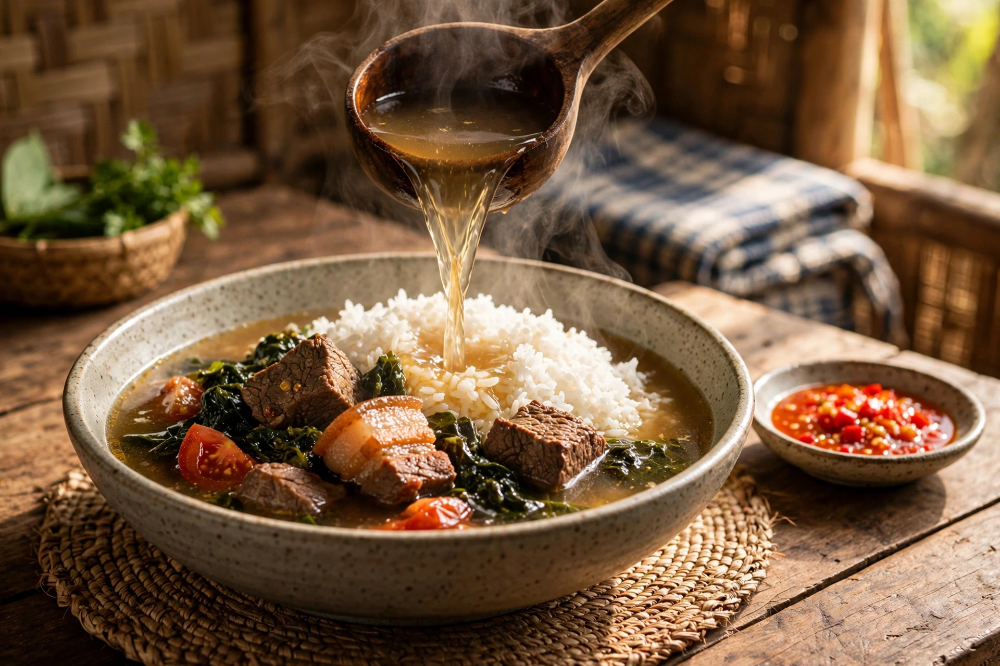
Cape Verde · Africa · Dish 24 of 50
A stew of survival that became a symbol of identity — Cape Verde’s national dish.
Cachupa is the national dish of Cape Verde, and it is a stew of survival that became a symbol of identity. Its ingredients tell the archipelago’s colonial history: corn and beans came from West Africa and the Americas, olive oil and sausage from Portugal, fish and seafood from the surrounding Atlantic. It was born in the 15th century onward, in the days of Portuguese settlement and the Atlantic slave trade, when enslaved Africans with limited food combined dried corn and beans with whatever scraps were at hand. Maize, brought from the Americas by Portuguese ships in the 1500s, grew well enough in the dry, rocky soil to become the main staple. The dish is thought to have started on Santiago, the largest island, where the Portuguese founded Cidade Velha, one of the first European colonial settlements in the tropics.
There are two main versions, and the difference is real, not marketing. Cachupa Pobre — “poor cachupa” — is the everyday version: mostly corn and beans, maybe some cassava, squash or a bit of fish; it was the daily food of working people. Cachupa Rica — “rich cachupa” — is loaded with meats and vegetables and is reserved for special occasions, weddings and family gatherings. Preparation is a genuine ritual: the corn is soaked the day before, often pounded in a tall wooden mortar — the pilão — to loosen the hulls, work traditionally done by women in groups, whose pounding rhythm is linked to work songs and to batuku, the musical tradition of Santiago. Then the pot simmers for three to five hours.
Leftover cachupa is never thrown away. The next morning it is drained, pan-fried and served as cachupa refogada — also called cachupa guisada — with a fried egg, often alongside linguiça sausage or fried mackerel: a classic Cape Verdean breakfast. The dish stands for resilience, community and morabeza — Cape Verdean hospitality — and it is a point of pride for the diaspora; the singer Cesária Évora helped carry its name around the world. It is traditionally accompanied by grogue, the sugarcane spirit first distilled on the islands around 1504 — a drink served alongside the meal, not an ingredient in it.
General food information, not medical advice.
Cape Verde · The Recipe
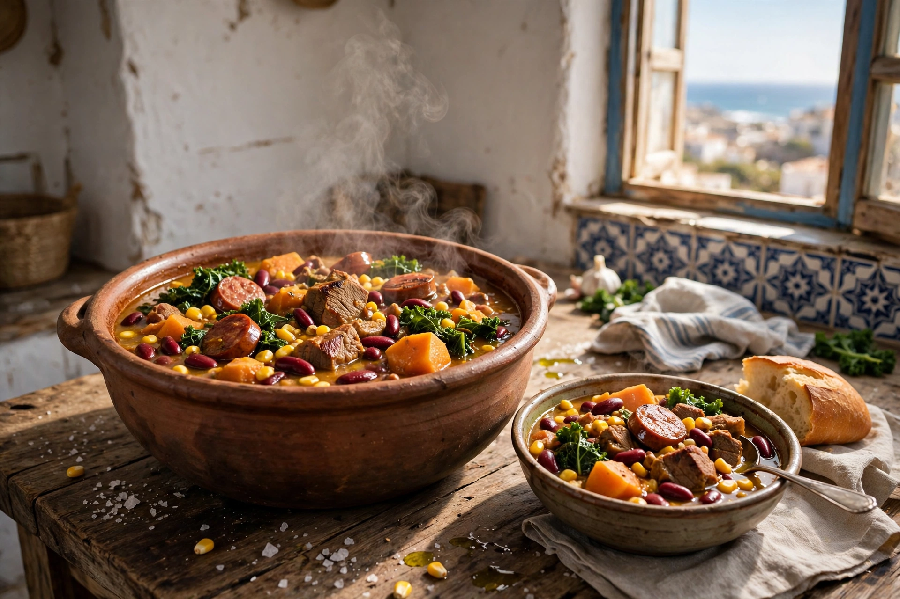
DR Congo · Africa · Dish 25 of 50
Fish steamed in leaves on the Congo River — the leaf is the pot.
Liboke is Lingala for a packet or parcel of food cooked in leaves — plural: maboké — and it is one of the oldest cooking methods in Central Africa. It grew out of the fishing communities along the Congo, Ubangi and Kasai rivers. A fisher could catch a fish, season it, wrap it in leaves picked from the forest and cook it right away on the riverbank — it needs no pot and little fuel, and it keeps all the juices inside. The traditional wrapper is the large, tough leaf of plants in the Marantaceae family, especially Megaphrynium macrostachyum, sold in Central African markets for exactly this purpose; banana leaves are the common substitute today.
The leaf is the pot, the lid and part of the flavour all at once. Sealed inside, the fish cooks in its own juices and the juices of tomato and onion, so it is steamed rather than grilled, while the outer leaves char over the embers. Before modern refrigeration, the tight leaf seal also protected cooked food from air and insects, extending its shelf life — a forest technology as much as a recipe.
Today maboké is a national dish in both Kinshasa and Brazzaville, found at roadside grills, at weddings and family gatherings, and in Congolese restaurants in Paris and Brussels. The most common version is liboke ya mbisi — fresh fish, usually tilapia or catfish; a close relative, liboke ya mbika, fills the same leaf parcel with ground pumpkin seeds instead of whole fish. Liboke is deeply rooted in the communal and celebratory life of Congo — a dish of resourcefulness, and of respect for the forest that provides both the food and the cooking vessel.
General food information, not medical advice.
DR Congo · The Recipe
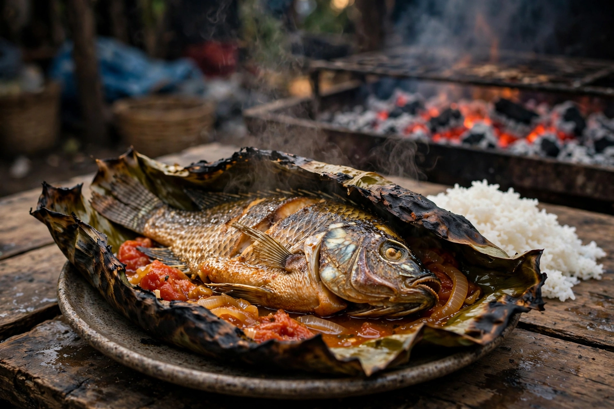
Cameroon · Africa · Dish 26 of 50
The Sunday dish of the Bayangi — two forest leaves, red palm oil and smoked fish.
Eru takes its name from its central ingredient: okok — Gnetum africanum — a wild forest vine that climbs the trees of the Central African rainforest. Its leaves are thick, smooth, almost like leather. The dish belongs to the Bayangi people of the Manyu division, around Mamfe in the South-West, where the leaf has been gathered for generations and where the way of preparing it was settled. The same leaf is called okok by the Beti of the Centre and South — where it is cooked in a very different, often sweet way with peanuts — and afang or okazi across the border in Nigeria.
Eru is the Sunday dish par excellence: the one cooked when the family gathers, when an honoured guest arrives, or when a traditional ceremony calls for something more than ordinary food — weddings, births and funerals in Bayangi, Bakossi, Bakweri and Banyang communities. What sets it apart is the pairing of two leaves: the tough eru leaf, sliced very fine, and waterleaf, whose soft, juicy leaves melt down and soften the eru. They are simmered with plenty of red palm oil, dried crayfish, smoked fish, beef and cow skin — kanda. It is traditionally eaten with water fufu, a soft white paste of fermented cassava, or with garri — torn into pieces by hand and used to scoop up the thick, dense, almost stringy sauce.
From Manyu the dish followed people: today it is at home in Buea, Douala and Yaoundé and in diaspora kitchens everywhere. Harvesting eru is a large forest-based trade that crosses into Nigeria, and pressure from over-harvesting has led to projects to grow the vine on farms instead of gathering it wild.
General food information, not medical advice.
Cameroon · The Recipe
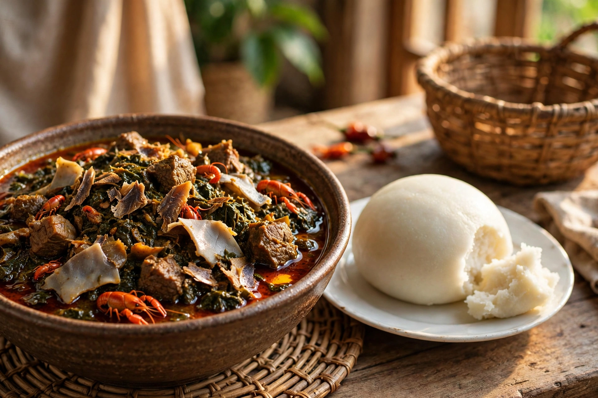
Zambia · Africa · Dish 27 of 50
Greens in groundnut sauce — Zambia’s humble, beloved everyday stew.
Ifisashi means “groundnut sauce” — the name comes from the Bemba language of northern Zambia; in Chinyanja it is called visashi. It is one of the simplest dishes in this collection and one of the most loved: leafy greens simmered in a creamy sauce of pounded groundnuts, served with nshima. Its genius is in its adaptability — whatever leafy greens the land gives that season find their way into the pot: pumpkin leaves — chibwabwa — sweet potato leaves, cassava leaves — katapa — amaranth — bondwe — rape, okra leaves — delele — or hibiscus leaves — lumanda.
The dish grew out of an agricultural landscape where groundnuts and maize dominate smallholder plots, and where greens are gathered from the garden edge, the pumpkin patch or the cassava field rather than bought. Because meat was historically expensive and reserved for celebrations, groundnut sauce became the everyday way to make plain greens rich, calorific and satisfying. The wooden mortar and pestle — ibende and umunshi in Bemba — is the machine that makes ifisashi possible, turning whole groundnuts into the flour that becomes the sauce. In rural Zambia the mortar and pestle is not just a tool; it is the soundtrack of childhood, marriage, grief and celebration, the pulse of a home.
Ifisashi is cooked in communal settings and appears at weddings, at funerals, and at the end of long days in the fields. It is eaten by hand: small portions of nshima are shaped into balls and used to scoop up the stew. The same groundnut-and-greens logic ripples across the region — Malawi, Zimbabwe and Congo all have their own versions — but ifisashi is Zambia’s own.
General food information, not medical advice.
Zambia · The Recipe
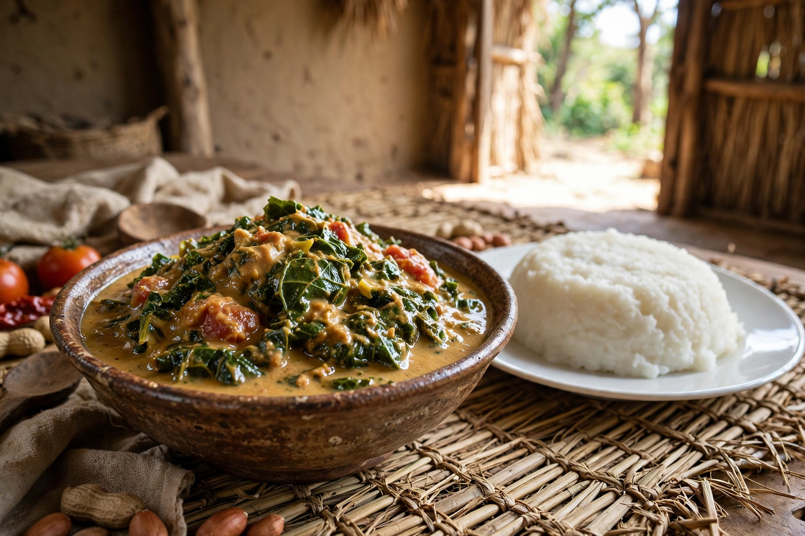
Ghana · Africa · Dish 28 of 50
Ancestral food of the Ga-Dangme — roasted corn flour joined with sacred palm-nut soup.
Apraprasa — originally called akplijii, or akplidzi — is a dish of the Ga-Dangme people of Greater Accra, and it is a dish with a sacred past. It is made by heat-mixing roasted corn flour with palm-nut soup, and that soup is the heart of the story: palm-nut soup is an ancient sacred soup of the Ga, always prepared as the companion to another sacred corn-flour meal, kpokpoi — kpekpele — during Homowo, the ancient harvest festival of the Ga people. The Ga brought these practices with them to ancient Ghana and taught the other peoples how to prepare palm-nut soup. Over time the soup became common across Ghana and lost its sacred status — but apraprasa kept its place as a food of special occasions.
Its very name tells you how it is eaten: apraprasa comes from “prapra wo nsa” — “wipe your hand” — because it is a complete meal, soup and starch already joined into one, so all you need is to wipe your hand and eat. It is not street food and not an everyday meal. It is served at marriages, naming ceremonies, birthdays and family cookouts — the occasions when a family gathers. It is listed on Ghana’s National Register of Intangible Cultural Heritage, and food writers in Ghana fear it may go extinct: few young cooks learn it, and it is rarely found outside the home.
The dish also carries a harder story. In some places it became known as “witches’ food”, a stigma that pushed it to the margins — and today a new generation of Ghanaian chefs is reviving it proudly, cooking it on camera, selling it in Accra, and calling it what it is: ancestral food, healthy and indigenous, made from scratch. One honest note: exactly which group “owns” the dish is debated — Ga, Akan, Ewe and others all claim a share of it, and the names shift by language: akplijii to the Ga, aprapransa to Akan speakers, akpledze to the Ewe, dzenkple in the Volta Region. The Ga origin is documented; the shared heritage is stated openly here.
General food information, not medical advice.
Ghana · The Recipe
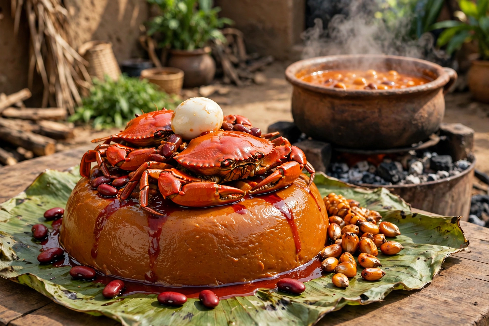
Niger · Africa · Dish 29 of 50
Steamed millet turned vivid green by moringa — the festive dish of the Sahel.
Dambou is a festive dish of the Sahel, native to the Zarma and Songhai peoples of south-western Niger. At its heart is millet — the staple grain of Niger, grown because it survives where little else will in an arid climate — steamed into light, fluffy grains and turned vivid green by finely chopped moringa leaves. It looks a little like the couscous of the Maghreb, but its identity is entirely Sahelian.
Dambou is eaten at any time, but mainly at festive occasions: weddings and outdoorings — naming ceremonies for newborns — where the communal act of cooking and sharing food is central. It is shared from a large communal bowl, in keeping with regional dining customs, and often served with a moringa salad — kopto — and grilled meat or fish on the side. The dish travelled with Songhai and Zarma traders and migrants, and it is now common in the Zongo settlements — the neighbourhoods where Songhai and Zarma people settled — in cities across West Africa.
The Zarma and Songhai are the heirs of the Songhai Empire, which dominated the western Sahel in the 15th and 16th centuries, and dambou carries that history in a bowl: a subsistence food that grew into a celebration food, built from the two things the Sahel always provides — hardy grain and the moringa tree, the “miracle tree” whose leaves are one of the most nutritious foods on earth.
General food information, not medical advice.
Niger · The Recipe
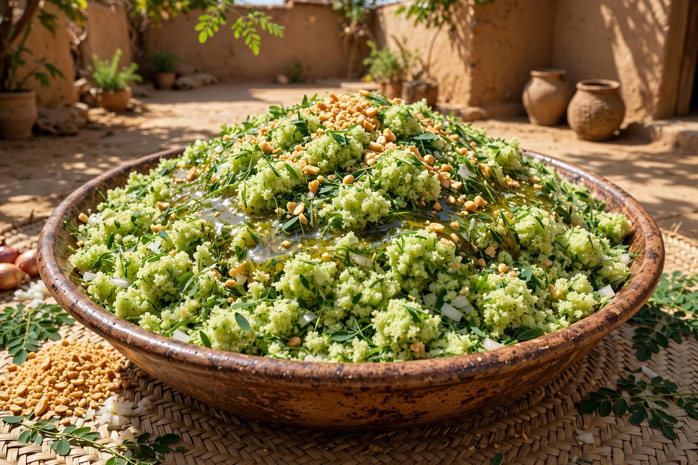
Namibia · Africa · Dish 30 of 50
Namibia’s signature street food — beef grilled fast over open coals in Katutura.
Kapana is Namibia’s signature street food, and it is as much a place as a dish. The name comes from an Oshiwambo word for grilling or frying over open fire, and kapana refers both to the grilled meat and to the market where it is sold. The home of kapana is the Oshetu Community Market, known as Single Quarters, in Katutura township in the capital, Windhoek — rows of stalls where grill masters work over old oil-drum braziers, flipping meat with long knives while smoke rolls into the road.
Katutura itself tells a harder story. Its name means “the place where we did not want to live” in Otjiherero. It was built under South African apartheid administration in the late 1950s as a forced-removal township; on 10 December 1959, an uprising against the removals left 11 people dead. Residents were initially treated as temporary migrant labourers, and the township was given almost no formal commercial infrastructure — so a vibrant informal economy grew instead, most famously around kapana. Butchers began grilling leftover cuts beside their stalls and selling them cheaply as snacks to passersby; over time the practice became an institution. After independence in 1990, rural migrants flooded into Windhoek as movement restrictions were lifted, and the Single Quarters market became the country’s most important informal food economy.
Eating kapana is a ritual with its own rules: you tell the vendor a price, not a quantity — a small amount of money buys a generous handful, enough for two people to taste. The meat is fresh, slaughtered that morning and on the grill within hours. It is cut into rough cubes, grilled fast over open coals, sliced into bite-size strips and served straight off the grate, eaten standing, by hand, dipped in kapana spice, coarse salt and chili, with a fresh tomato-and-onion relish and a hunk of white bread roll. Namibia’s per-capita beef intake is among the highest in Africa, and grilling meat is a social and cultural event here, like the braai in South Africa. Kapana is the one thing that unites all Namibians, regardless of social or economic status.
General food information, not medical advice.
Namibia · The Recipe
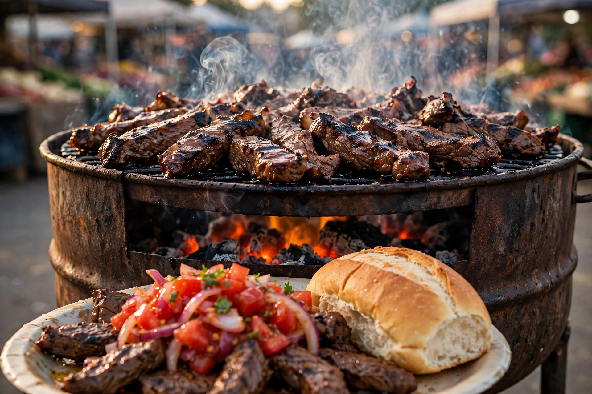
Georgia · Europe · Dish 31 of 50
Crisp chicken drowned in garlic and milk — Racha’s feast from a mountain village.
Shkmeruli is chicken fried until the skin is crisp, then finished in a hot sauce of crushed garlic and milk, served still bubbling in a ketsi — a shallow clay pan. Its name comes from Shkmeri, a tiny village at about 1,700 metres in Upper Racha, near the town of Oni. Chicken cooked with garlic is made all over Georgia, but the people of Shkmeri are credited with pairing fried chicken with garlic and milk, and the dish took the village’s name. In the villages, the sauce is made with milk or even water; in Tbilisi restaurants it is often made richer with cream.
Legend says a local ruler, wanting something new on his table, ordered his chef to invent a dish from whatever was already in the kitchen — chicken, milk, garlic and spices. The result delighted him, and the dish spread from Racha across the whole country. Another folk tale tells of a thrifty peasant saving a chicken that was about to be wasted by cooking it with what was at hand. Both stories are legends, but they agree on the dish’s spirit: mountain thrift turned into feast food.
Today shkmeruli is a fixture of the Georgian supra — the great feast table run by a toastmaster, the tamada — and of weddings and holiday gatherings. It is served family-style, straight from the clay pan, with bread for mopping up the garlic sauce. In Racha it is often eaten with Khvanchkara, the region’s naturally semi-sweet red wine, made from grapes grown in a single village.
General food information, not medical advice.
Georgia · The Recipe
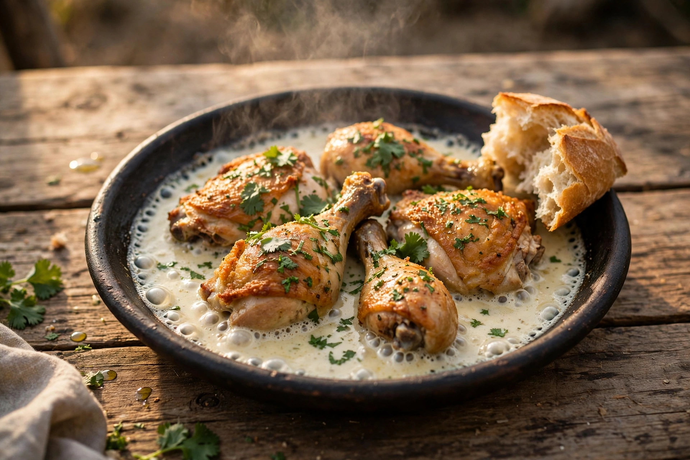
Armenia · Europe · Dish 32 of 50
A pumpkin that opens like a flower — Armenia’s harvest feast.
Ghapama is a whole pumpkin stuffed with rice, dried fruit, nuts and honey, then baked until soft and cut open at the table in front of the guests, like a flower opening. The name comes from the Turkish kapama, meaning “cooked in a closed vessel” — the pumpkin is its own pot, lid and serving dish. Pumpkins reached Armenia from the Americas, so the dish in its present form is only a few centuries old, but the tradition of stuffing vegetables and grain is far older in Armenian cooking.
Ghapama is a harvest dish, made in autumn when pumpkins are in season, and it belongs to the great winter feasts: Armenian New Year (Amanor), Armenian Christmas on January 6, Easter, and weddings. At weddings it was placed before the newlyweds as a wish for a sweet and long life together, and it was a symbol of abundance and prosperity — the dried fruit and nuts were costly, so this was never everyday food. Making it was a whole-family job: hollowing the pumpkin, chopping the fruit, mixing the filling. The pumpkin is the empty storehouse of the year’s harvest, filled again with the good things of the year.
The dish is so loved it has its own folk song, “Hey Jan Ghapama” (“Hey, dear ghapama”), the only food song in the Armenian songbook, made famous by folk singer Harout Pamboukjian. It is often sung as the pumpkin arrives at the table. A beloved cultural reading of the dish says the pumpkin stands for the Earth, the rice for all humanity, and the dried fruit and nuts for peoples of different faiths and nations gathered in one dish — a beautiful interpretation to share as a story, not a documented fact.
General food information, not medical advice.
Armenia · The Recipe
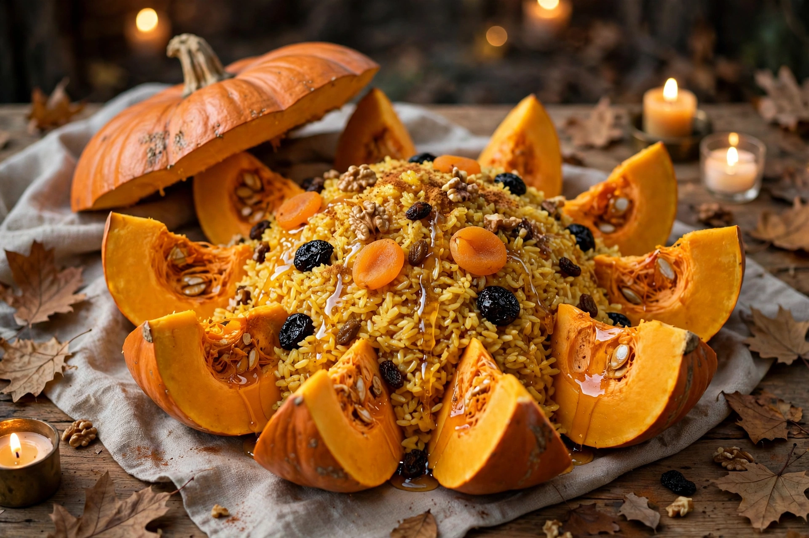
Albania · Europe · Dish 33 of 50
Lamb baked under a golden yogurt custard — Elbasan’s pan of yogurt.
Tavë kosi is lamb, often with rice, baked under a tangy custard of yogurt, eggs and flour until the top is golden and puffed. The name tells you exactly what it is: tavë means baking pan and kos means yogurt — a pan of yogurt. It is widely called Albania’s unofficial national dish, and it belongs to Elbasan, which is why it is also known as tavë Elbasani — and, in Turkey and neighbouring countries, as Elbasan tava.
The story Albanians tell dates the dish to 1452, when Sultan Mehmed II was besieging Kruja, where the Albanian hero Skanderbeg was holding out. While occupying Elbasan, the sultan was served lamb marinated in spiced yogurt — marinating meat in yogurt is an old Ottoman practice. Rather than waste the leftover lamb and yogurt, the cooks baked them together into a casserole. The dish was such a success it spread through the Ottoman world. Albanians also say tavë kosi was on the table when independence was declared in 1912. Both are told as legends, but the dish’s roots are genuinely old: food writers date it to the 15th century, and it blends Ottoman technique with the pastoral cooking of the Albanian highlands, where lamb and soured milk were the staples of everyday life.
Today it is wedding food, Sunday family food and the dish Albanians abroad cook when they want a taste of home. It is baked and served in the clay vessel it cooked in, cut at the table, and eaten with bread. In Turkey the same dish is topped with béchamel instead of yogurt, but the Albanian version keeps the tangy yogurt custard.
General food information, not medical advice.
Albania · The Recipe
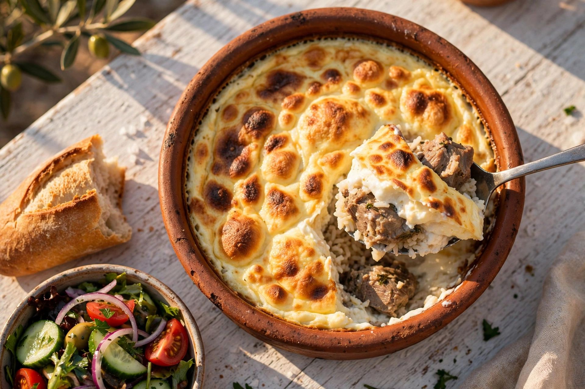
Moldova · Europe · Dish 34 of 50
The golden dome that carried a nation — Moldova’s polenta, cut with a thread.
Mămăligă is a stiff golden porridge of yellow maize flour, boiled in salted water and beaten in a cast-iron pot called a ceaun until it pulls away from the sides, then turned out as a dense dome and cut — with a taut thread, never a knife, so it does not stick. Before maize arrived from the Americas in the 17th century, the same porridge was made from millet, the pulmentum of the Romans. Maize spread fast because it was not taxed in kind like wheat, and by the 1800s it had become peasant bread — the food that carried poor rural families through the famines of the 17th and 18th centuries. That history left a stigma that has since reversed completely: mămăligă is now a point of national pride, served in the finest restaurants as well as in village kitchens.
The canonical serving is mămăligă cu brânză &537;i smântână: hot polenta layered with salty sheep’s cheese, sour cream and cracklings (jumări), often with a fried egg. The cheese, brânză, is the salty white backbone of Moldovan flavour, made at the stână — the seasonal shepherds’ camp — and the most prized form, brânză de burduf, is kneaded, salted and packed into pine bark to mature, giving it a sharp, faintly resinous depth. A full Moldovan meal sets the mămăligă dome in the middle of the table with meat or fried fish and mujdei, a fierce garlic-and-oil sauce, and everyone cuts slices for themselves. It is shepherds’ food, festival food and everyday food all at once — the plate on which much of Moldovan cooking is served.
General food information, not medical advice.
Moldova · The Recipe
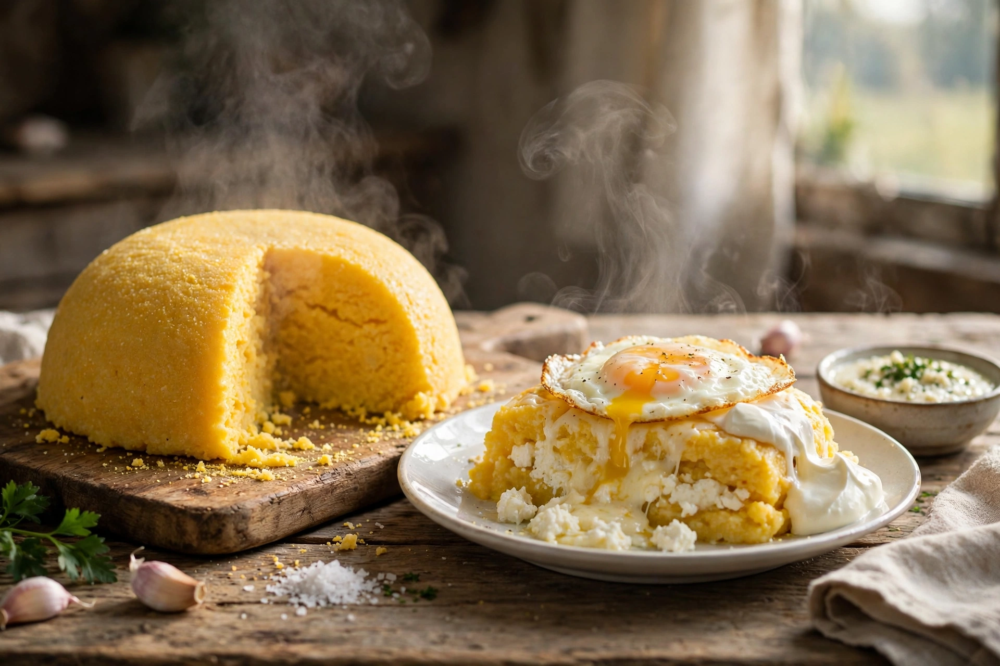
Lithuania · Europe · Dish 35 of 50
Dumplings named for airships — Lithuania’s national dish.
Cepelinai are the national dish of Lithuania: large, football-shaped potato dumplings, each about the size of a fist, stuffed with seasoned ground pork, curd cheese (varškë) or mushrooms, boiled gently until the potato shell turns translucent and glossy, and drowned in spirgai — crispy fried bacon and caramelised onions — with a big dollop of cold sour cream. Their older name is did&017E;kukuliai, “big dumplings”. They were renamed cepelinai in the early 20th century because their oval shape resembled the German Zeppelin airships that fascinated the public — a modern name for an old peasant food.
Potatoes reached Lithuania in the 17th century and became the country’s staple by the 1800s, the crop that carried farming families through brutal Baltic winters and times of scarcity, including the Soviet occupation. Cepelinai were made to feed hungry workers: heavy, filling, and worth the hours of grating and shaping. That is why they are still, above all, a Sunday family dish and a potato-harvest dish — made together, eaten together, and followed by a long nap. In western Lithuania they are made bigger than in the east, and every family argues that its own size and filling are the correct ones. Two or three to a plate is a full meal; one is dinner enough for most people.
General food information, not medical advice.
Lithuania · The Recipe
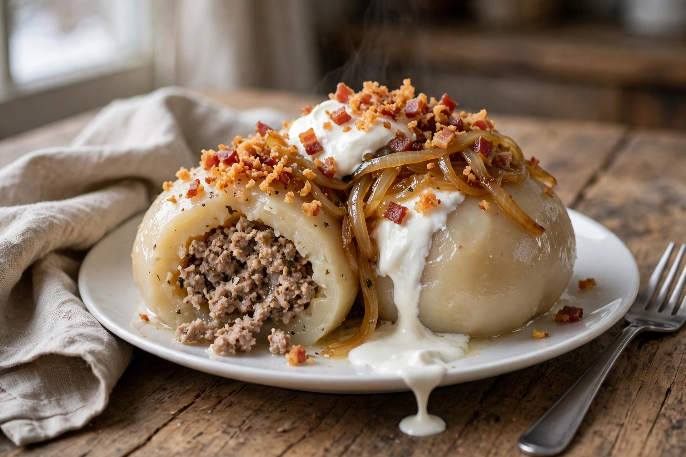
Faroe Islands · Europe · Dish 36 of 50
Mutton aged by the Atlantic wind — the Faroe Islands’ taste of patience.
The Faroe Islands most likely take their name from the Old Norse Færeyjar — “Sheep Islands” — and there are still more sheep than people on the eighteen islands. For a thousand years, the Faroese larder has been the wind itself. Meat and fish are hung in a hjallur, a small wooden drying shed with slatted walls that let the cold, salty Atlantic breeze pass through, and left to dry and ferment for months. No salt, no smoke — just wind, time and climate.
Ræst kjøt is fermented mutton, aged for a shorter time than its famous cousin skerpikjøt, the fully wind-dried mutton that is sliced paper-thin and eaten on rye bread. Ræst kjøt is milder, and it is boiled before serving — a classic Sunday dinner in Faroese homes, eaten with boiled potatoes. Its flavour is deep, savoury and funky, often compared to a strong blue cheese crossed with the sea, and its strong aroma is completely normal; it is the taste of patience.
This is celebration food as well as everyday food. At Ólavsøka, the national holiday on July 28–29 marking the death of Saint Olaf, the whole country gathers in Tórshavn for rowing races, the chain dance, parades and the opening of parliament — and the traditional table is never far away. The Faroese also keep the tradition of heimablídni, home dining, where visitors are invited into a family’s house to eat the food of the islands. The meat in this dish is not cooked from raw in an afternoon; the ageing is the dish, and it is the reason Faroese food tastes like nowhere else on earth.
A cook’s note: ræst kjøt cannot be made from fresh lamb at home. The mutton must already be wind-aged for months in a hjallur. Buy ready-aged ræst mutton from a Faroese producer or a Nordic specialist butcher. Do not attempt to ferment meat at home without proper conditions.
General food information, not medical advice.
Faroe Islands · The Recipe
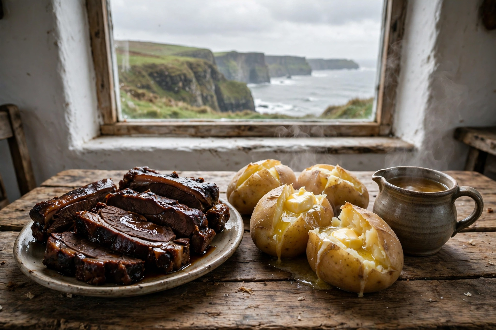
Basque Country · Europe · Dish 37 of 50
Food from the pot — the Basque fishermen’s tuna stew.
Marmitako is a one-pot stew of fresh tuna and potatoes, and its name tells its whole story: marmita is the Basque word for a metal cooking pot with a lid, and -ko means “from” — this is, literally, food from the pot. It was born on the decks of Basque fishing boats in the Bay of Biscay. The appointed cook had one vessel, a fire, hungry fishermen and the day’s catch, plus the provisions that kept well at sea: potatoes, onions and dried peppers. Out of that necessity came one of the great stews of Europe.
The Basques are one of Europe’s oldest seafaring peoples — their ships reached the North Atlantic and Greenland from the late Middle Ages — and they were among the first Europeans to grow the potato, planting it along the Bay of Biscay coast by the late 16th century, long before most of Europe knew it existed. The true fish of marmitako is the albacore tuna, bonito del norte, called hegaluze in Basque — the white tuna, not the ruby-red tuna the rest of the world prizes. Its season runs through the warm months into early autumn, so late summer, when the bonito is still running and the evenings are cooling, is marmitako’s moment.
Today it is a summer staple in fishing towns like Bermeo, Getaria and Ondarroa, cooked at festivals and in competitions — San Sebastián holds an annual marmitako cooking contest judged by the region’s chefs. It fell out of fashion briefly in the late 20th century, when the Nueva Cocina Vasca movement chased refinement, but it has returned to menus across the region, traditional and modern alike. The rules are simple and fiercely kept: crack the potatoes, never cut them cleanly, so their starch thickens the broth; add the tuna last, so it stays juicy.
General food information, not medical advice.
Basque Country · The Recipe
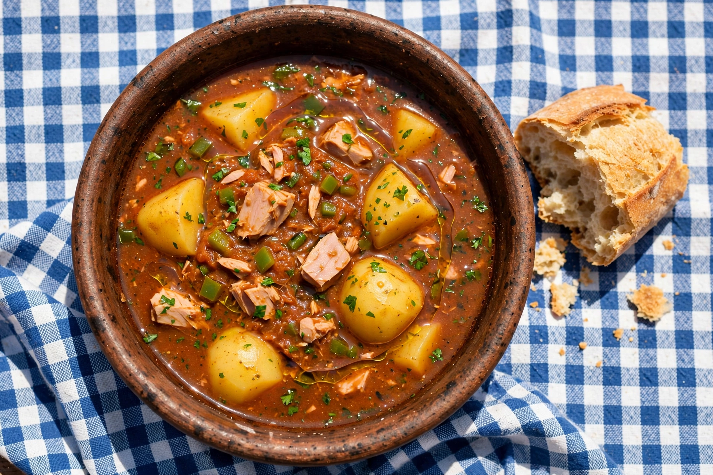
Sardinia · Europe · Dish 38 of 50
A whole pig, myrtle smoke and a feast table — Sardinia’s roast of celebration.
Porceddu — su porceddu in Sardinian — is a whole suckling pig, four to eight weeks old and still milk-fed, spit-roasted slowly over a wood fire until the skin cracks like glass and the meat underneath is soft enough to pull apart with a fork. It is the centrepiece of Sardinian feast cooking, and it belongs to the shepherding culture of the interior — the Barbagia highlands around Nuoro, Oliena, Mamoiada and Orgosolo — rather than to the coast.
The pig is seasoned with almost nothing: coarse sea salt, and the smoke of myrtle and juniper wood. The classic method, a s’achettu, sets the pig on a long spit at an angle beside the fire — not directly over it — so the fat renders slowly without burning the skin, turning for three to five hours. The older, rarer method, a carraxiu, buries the seasoned pig in a pit lined with hot embers and myrtle branches, sealed with earth and left to cook underground for hours — a technique of shepherds who needed to cook slowly and discreetly while out with the flock. At the end, the pig is rested on a bed of fresh myrtle leaves, whose resinous perfume becomes the dish’s signature.
A whole pig is a real investment, so porceddu has always been feast food, not everyday food: Sundays, weddings, saint’s days and the great festivals — Sant’Efisio, the Redentore feast — where it is cooked in bulk over open fires. It is eaten communally, carved at the table, with pane carasau, the paper-thin flatbread shepherds carried in their saddlebags for weeks, and Cannonau, Sardinia’s red wine. Some say the tradition reaches back to the island’s ancient Nuragic past, when meat was cooked over open flame with the same aromatic shrubs still used today. At the end of the meal comes mirto, the liqueur made from myrtle berries.
A cook’s note: the authentic dish is a whole pig on a spit over a wood fire. The recipe below gives the home-oven version, using a small suckling pig from a butcher — order ahead — or, as a practical substitute, a bone-in pork shoulder with the skin on. Keep the myrtle — it is what makes it porceddu.
General food information, not medical advice.
Sardinia · The Recipe
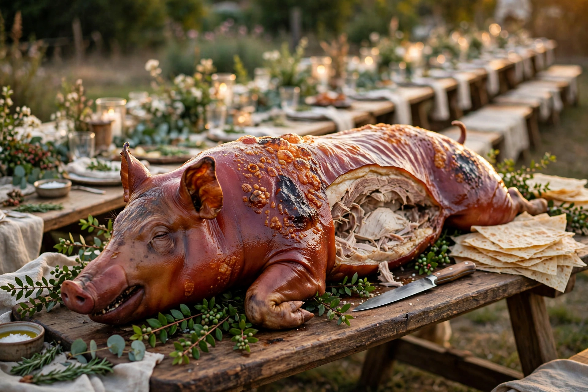
Wales · Europe · Dish 39 of 50
The pot that has simmered for thousands of years — the national dish of Wales.
Cawl (pronounced “cowl”) is the national dish of Wales: a slow-cooked broth of lamb, leeks and root vegetables from a single pot. The word itself hints at its age — it is believed to come from the Latin caulis, meaning a plant stalk or cabbage — and the dish predates written records. Long before pots could be hung over a fire, prehistoric cooks in Wales used hot stones to boil water in pits, and the one-pot meal never left.
In medieval Wales, cawl was the ultimate zero-waste, seasonal dish. Sheep were kept mainly for wool, so early versions were made with salted bacon, ham or tough cuts of beef rather than lamb, packed with whatever grew well in the damp climate: cabbages, swedes, parsnips and carrots. The pot simmered all day over the fire; as portions were ladled out, new ingredients were thrown in. The leek — cennin — was always the star, added at the very end so it kept its sweet, sharp bite.
The leek is also Wales’s national emblem. Legend says St David told Welsh soldiers to wear leeks in their caps so they could tell friend from foe in battle against the Saxons — Shakespeare even has the Welsh captain Fluellen make the boastful Pistol eat a leek in Henry V. Welsh people still pin leeks (or daffodils, cennin Pedr, “Peter’s leek”) to their clothes on St David’s Day, March 1, when cawl is the dish of the day in homes across the nation.
Cawl was traditionally eaten in two courses from the one pot: first the broth, sipped from a wooden bowl, then the meat and vegetables as a second plate, with bread and a wedge of crumbly Caerphilly or strong Welsh cheddar. And every Welsh grandmother (mamgu) will tell you the golden rule: never eat cawl on the day it is made. It always tastes better the next day, reheated — cawl ail dwym, “cawl warmed up again”. The modern version, with tender Welsh lamb — which has held Protected Geographical Indication status since 2003 — only settled into its current form at the end of the 20th century, but the pot has been on the fire for thousands of years.
General food information, not medical advice.
Wales · The Recipe
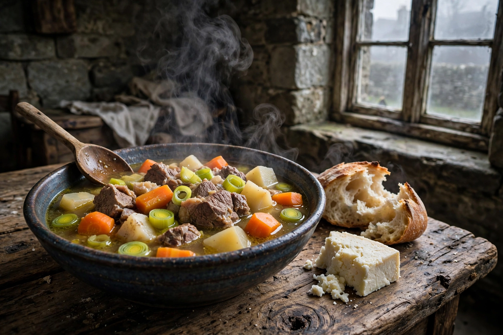
Iceland · Europe · Dish 40 of 50
Plucked fish, mashed potato and rye bread — Iceland’s everyday comfort.
Plokkfiskur means “plucked fish” — fish broken into small pieces by hand — and it is Iceland’s most beloved everyday fish dish: poached white fish flaked into boiled potatoes and folded through a soft onion-and-milk sauce, served hot with thick slices of dark rye bread and cold butter. It was born from thrift. On Fridays, Icelandic families took the week’s leftover boiled fish and yesterday’s potatoes and turned them into something more warming and cohesive than either had been alone. In a country where fishing has shaped everyday life for more than a thousand years, since the Norse settlement of the late 9th century, nothing from the sea was ever wasted.
Cod is the traditional fish, though haddock and pollock are equally common, and every household has its own version — more sauce, less onion, a little cheese melted on top. What never changes is the company it keeps: rúgbrauð, Iceland’s dense, dark, slightly sweet rye bread, baked in geothermal areas by burying the dough tin in hot ground for a day (hverabrauð, “hot-spring bread”). Plokkfiskur is the everyday counterpart to Iceland’s great preserved feast foods, the smoked, dried and fermented dishes that take centre stage at the Þorrablót midwinter celebrations in the old month of Þorri. This one is not for feasts; it is for Tuesdays, for coming in from the cold, for grandparents’ kitchens. It is the taste Icelanders return to across a lifetime.
General food information, not medical advice.
Iceland · The Recipe
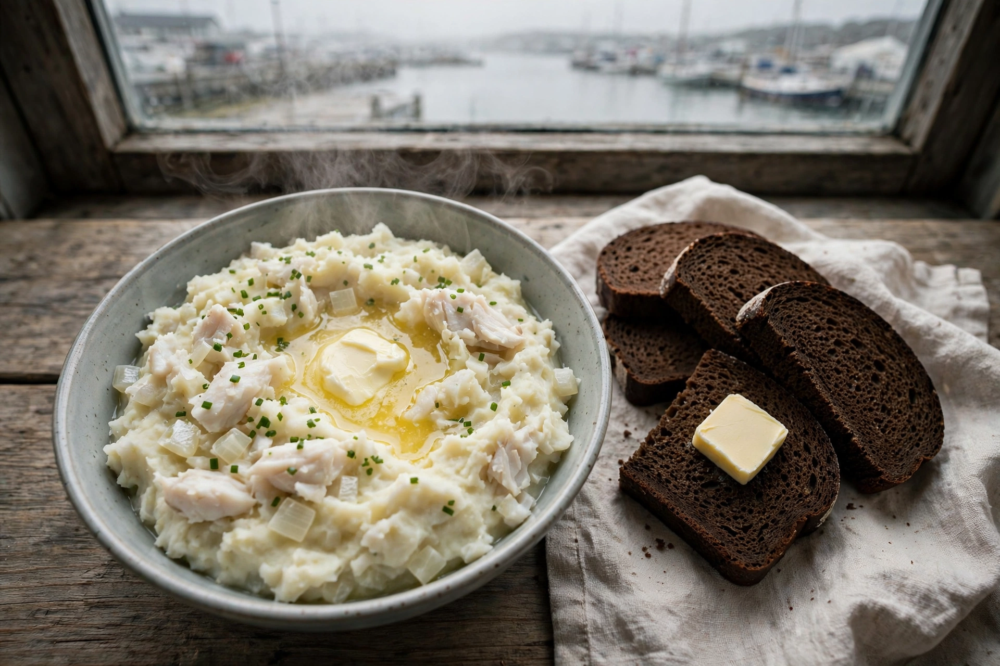
Yemen · Middle East & Oceania · Dish 41 of 50
Yemen’s national dish — a bubbling stew crowned with sea-foam.
Saltah is Yemen’s national dish, and it is one of the strangest-looking national dishes in the world: a bubbling brown meat stew served in a heavy stone pot, crowned with a pale, airy froth that looks like sea foam. That froth is hulba — ground fenugreek seed soaked in water and whipped by hand until it turns white and fluffy. It sits on top of the stew and is never stirred in.
The base is maraq, a thick beef stock cooked with bones and seasoned with black pepper, cumin and spring onion. On top of the maraq go the hulba and sahawiq, a raw salsa of tomatoes, garlic, green chilli and herbs pounded on a flat stone. Rice, potatoes, scrambled egg or vegetables are often cooked in the stew. The name is said to come from a word meaning to eat and lick eagerly — and that is how it is eaten: the pot arrives at the table still bubbling, everyone tears off pieces of flatbread (malawah or khubz), and the bread does the work of the spoon. There are no individual plates and no cutlery; the meal is communal by design.
Its history is humble. One account traces saltah to the Ottoman period, when it was a charitable food made from leftovers donated by wealthy households or mosques — the idamat, or charitable kitchens. Another traces the word to salatah (salad or composition), which likely arrived with Turkish troops. What is certain is that it grew out of the highlands around Sana’a, where the stone pot keeps the stew bubbling through cold mountain nights, and that it is eaten almost daily — usually for lunch, often late, and always with bread. In Yemeni culture a meal without bread is not a meal, and saltah is the dish that proves it.
General food information, not medical advice.
Yemen · The Recipe
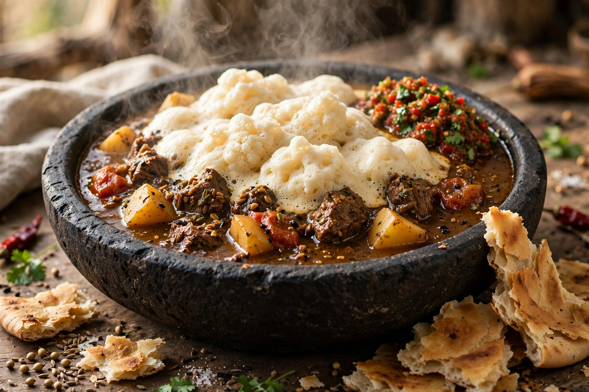
Oman · Middle East & Oceania · Dish 42 of 50
The feast that is buried, not cooked — Oman’s pride at Eid.
Shuwa is not cooked. It is buried. A whole leg of lamb or goat — sometimes a whole animal — is rubbed with a thick paste of spices, garlic and vinegar, wrapped in banana or date-palm leaves, tucked into a woven palm-frond sack, and lowered into a tannour, an underground sand oven dug into the earth and filled with hot embers. The pit is sealed, and the meat slow-cooks in the earth’s own heat for 24 to 48 hours. When it is dug up, the meat falls from the bone without resistance, deeply smoky and soaked through with spice.
Shuwa is the centrepiece of Eid — above all Eid al-Adha, the Feast of Sacrifice, which honours the Prophet Ibrahim’s willingness to sacrifice his son — and of weddings and National Day (18 December). Whole villages prepare their pits together; the days of preparation, the marinating, the wrapping, the sealing of the oven, are as much the celebration as the eating. It is a dish of hospitality: to be invited to a home for shuwa at Eid is to be welcomed as family.
The spice paste, called baharat, is a family secret — typically coriander, cumin, cloves, chilli, turmeric, black pepper, dried lime and garlic — and no two families make it quite the same way. The home version in this book keeps the spirit of the dish — a long, slow, sealed roast with the same spice paste and leaf wrapping — in an ordinary oven. The traditional pit is described here so the reader understands what the dish truly is; the recipe is an honest adaptation, not a claim to be the pit itself.
General food information, not medical advice.
Oman · The Recipe
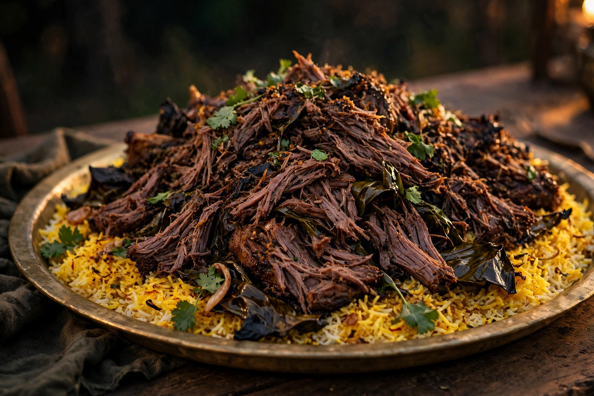
Uzbekistan · Middle East & Oceania · Dish 43 of 50
The bright green noodles of Khiva — Central Asia’s most recognisable plate.
Shivit oshi is the most recognisable plate in Central Asia: a mound of bright green noodles. The green comes from fresh dill — shivit is the Khorezmian word for dill — steeped in water and worked into a flour-and-egg dough, so the noodles are green all the way through. On top goes vaju, a slow beef and vegetable stew cooked down until it is deep reddish-brown, and the bowl is finished with a spoonful of cool, sour yogurt.
Nobody can say for certain where it began. In Khiva, cooks call it an old local dish whose beginnings no one can trace. One local legend says it was invented for a sick khan who was suffering from malnutrition after a long winter: his physician gathered dill from the garden, infused it into noodles, and the khan recovered. Another account says it appeared roughly 100 to 150 years ago and was a dish for weddings and honoured guests in the early twentieth century. A third credits Rajab Sattarov, a cook from Khiva, with carrying it to the capital Tashkent when he moved there in 1958 — which is how the rest of Uzbekistan first met it.
What is not in doubt is that it belongs to Khiva alone: it is the one dish you will struggle to find anywhere else in Uzbekistan, and inside the walled old city of Itchan Kala (a UNESCO World Heritage Site since 1990) it is on every teahouse menu. It is mainly a summer dish, made when dill is at its best, and the contrast is the point: hot green noodles, hot rich stew, cold sour yogurt. The word for “no dill” in Khorezmian is shivit sis — and in the rest of Uzbekistan, nobody understands it, which tells you how local this dish really is.
General food information, not medical advice.
Uzbekistan · The Recipe
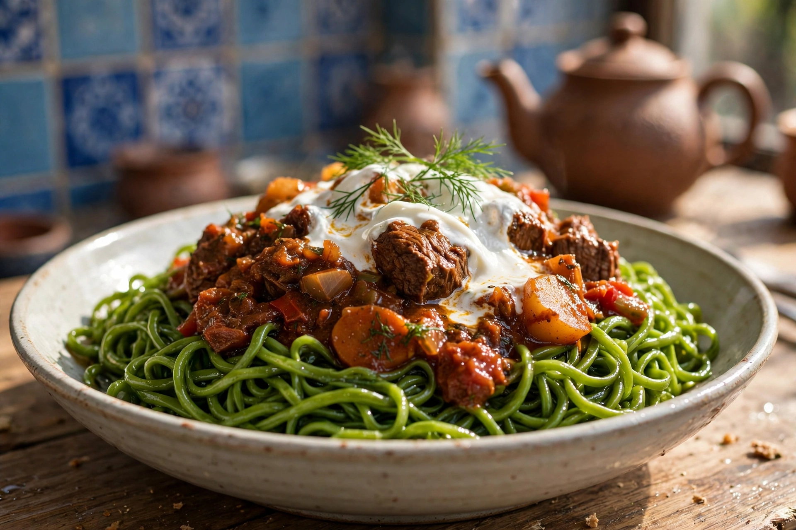
Tajikistan · Middle East & Oceania · Dish 44 of 50
Tajikistan’s national dish — dried yogurt, torn bread, and a shared platter.
Qurutob is Tajikistan’s national dish, and it is built from two things that kept mountain people alive through the winter: dried yogurt and bread. Its name tells the recipe — qurut (dried yogurt) plus ob (water). Qurut is made by straining salted sour milk until it becomes a thick paste, rolling it into small balls and drying them in the sun until they are hard as stone. The balls keep for months without refrigeration, packed with protein and fat, and they were the herder’s and traveller’s insurance policy across Central Asia. Dissolved in warm water, qurut becomes a tangy, salty sauce.
The sauce is poured over torn pieces of fatir, a flaky layered flatbread baked in a tandoor clay oven, until the bread softens into something between a salad and a savoury bread pudding. It is finished with onions fried in oil, fresh vegetables — tomato, cucumber, herbs — and sometimes lamb or hot pepper. It is served on a single large hand-carved wooden platter called a tabaq, and it is eaten by hand, with a pot of green tea. One rule is repeated everywhere: qurutob is not a dish to eat alone. It must be eaten with a group — family, friends, colleagues.
Its origin is in the south, in the rural villages and the Pamirs, where more than 90 percent of the country is mountain, winters are bitter, avalanches block the roads and villages are cut off until the snow melts. People cooked from what they had stored: flour, nuts, dried yogurt, onions. Qurutob is that survival food, turned by time and hospitality into a national emblem — a dish that grew out of the meeting of two ways of life, the herding tradition that produced qurut and the settled farming tradition that produced tandoor bread and garden vegetables. It is especially popular in the hot summer months, when its cool, sour flavour is refreshing.
General food information, not medical advice.
Tajikistan · The Recipe
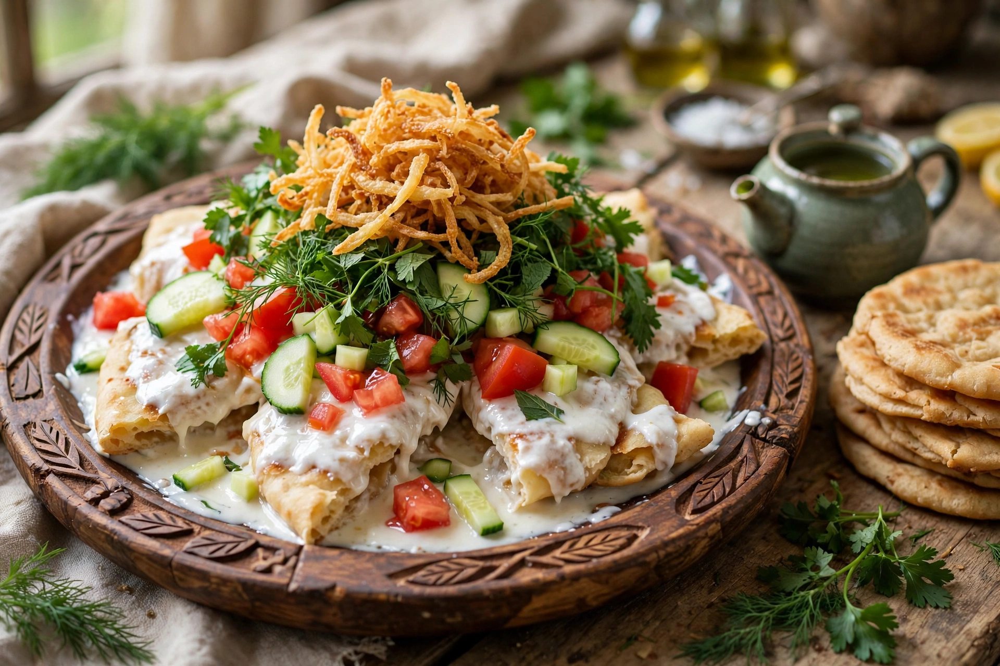
Turkmenistan · Middle East & Oceania · Dish 45 of 50
The taste of gratitude — bread torn by hand, never cut.
Dograma — also spelled doghrama or dogroma — is the most traditional dish of Turkmenistan, and several sources call it the country’s national dish. Its name is the recipe: it comes from dogramak, “to cut into pieces”, and that is exactly what the whole family does together. It is a dish that exists nowhere else in the region — an original Turkmen dish with no equivalent in the cuisines of neighbouring countries.
Dograma is not an everyday meal. It is a ritual of gratitude, made for Hudayoly — “the road to Allah” — the sacred gathering at which a family thanks God for a joy: a wedding, the birth of a child, or Eid (Kurban Bayram, called Gurbanlyk in Turkmen, the three-day festival of sacrifice). It is prepared only for happy occasions, and the preparation is the celebration itself. The night before Hudayoly, the women of the family rise early to bake petir, a flatbread with deliberately stiff dough, in the tamdyr (clay oven) — the stiffness matters, because the bread must not swell too much when the hot broth hits it. On the day, the men take on their work: a lamb is slaughtered as an offering, and the meat simmers for hours until it falls from the bone and the broth turns rich and golden.
Then everyone gathers. A cloth is spread over the floor and the family sits cross-legged around a mountain of warm flatbread. Hands move in rhythm, ripping the thin, flaky petir into small, irregular pieces — no knife is used, on principle; the taste is held to come out differently when the bread is torn by hand. The torn bread is mixed with finely chopped onion and the shredded meat, kneaded together by hand so the flavours marry, and scooped into hand-painted ceramic bowls. Steaming broth is poured over each bowl, and it is served with wooden spoons and a sprinkle of black pepper. When the meal is over, every guest leaves with a small packet of dry dograma, a way of sharing the family’s happiness, and says “kabul bolsun!” — may the Almighty accept your offering.
The dish reaches back to the nomadic roots of the Turkmen tribes who crossed the Karakum Desert. The hard, dry bread was practical: it could be stored for weeks without moulding, carried on camelback, eaten by shepherds on long journeys. Several sources trace dograma back to ancient sacrificial rites, though no date for that origin is securely documented. What is certain is the place it holds: the dish is the taste of gratitude, and the tearing of the bread together is itself the social act.
General food information, not medical advice.
Turkmenistan · The Recipe
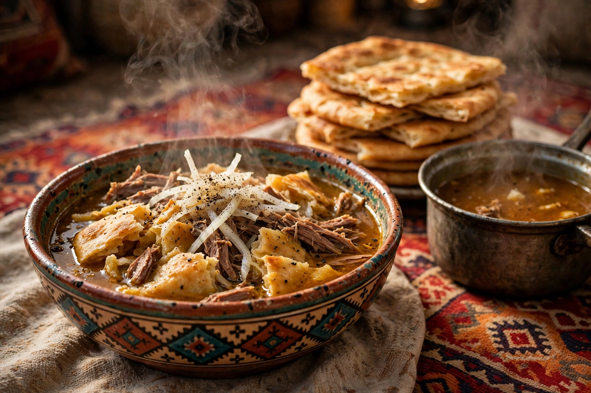
Fiji · Middle East & Oceania · Dish 46 of 50
The ocean in a bowl — fish “cooked” by lime, softened by coconut.
Kokoda is Fiji’s national dish, and it is the ocean in a bowl: cubes of raw fish “cooked” without any heat at all, in citrus juice, then folded into coconut milk. Long before refrigeration, Pacific islanders discovered that acidic juice — from local limes or lemons — could preserve raw fish by changing its proteins, much as heat does. The fish turns opaque and firm, and the sharpness is then mellowed by rich, silky coconut milk pressed from grated coconut. The dressing is a version of miti, the coconut-cream condiment with onion, citrus, tomato and chilli that Fijians spoon over many dishes.
Traditionally the fish was walu, the narrow-barred Spanish mackerel, marinated in lime juice, chillies, onions and seawater — and it is said that coconut milk was only added in the 1930s, by a restaurant owner in Suva. Today mahi-mahi, snapper or tuna are common, and the dish is served in coconut shells with lime wedges, at village Sunday lunches, weddings, festivals and resort buffets alike. It belongs to a wider Pacific family of coconut-cured fish — oka in Samoa, poisson cru in Tahiti, ika mata in the Cook Islands, ota ika in Tonga — but Fiji’s version is the one that travelled furthest, carried around the world by visitors who tasted it once and never forgot it.
Kokoda is more than a recipe; it is a picture of Fiji itself. Fish from the reef, coconut from the coast, lime from the garden — everything in the bowl grows within walking distance of where it is eaten. It is served cold, fresh and bright, and it is a dish that brings people together: a symbol of community, family and the gifts of the sea.
General food information, not medical advice.
Fiji · The Recipe
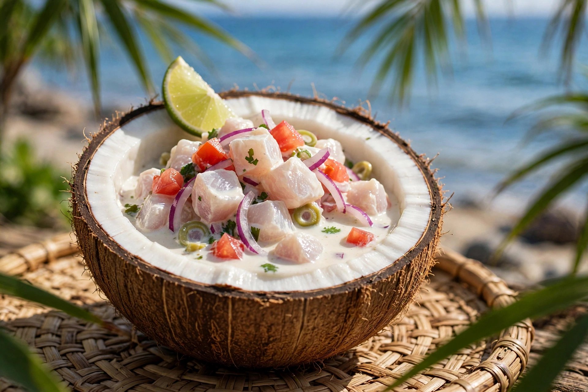
Safety note: only make kokoda with fish you would trust as sashimi — very fresh, from a reputable fishmonger, kept cold. If in doubt, use cooked fish instead, or skip the dish.
Samoa · Middle East & Oceania · Dish 47 of 50
Samoa’s food ambassador — taro leaves, coconut cream, and the Sunday umu.
If Samoa had a food ambassador, it would be palusami: young, tender taro leaves shaped into a little pouch, filled with freshly squeezed coconut cream and chopped onion, wrapped in a banana or breadfruit leaf, and baked in the umu — the Samoan earth oven — until the leaves are silky and the cream has thickened into the leaves. In its purest form it is entirely vegetarian: taro leaves, coconut cream and onion. Many families add a little corned beef, which is the version most visitors meet first.
You cannot understand palusami without the umu, and you cannot understand the umu without Sunday. The Samoan umu is built above ground, not in a pit: a fire of wood and coconut husks heats large volcanic stones until they glow; the embers are cleared, and whole fish, pork, chicken, green bananas and taro are laid directly on the white-hot rocks, then blanketed in banana and breadfruit leaves. The palusami parcels are tucked in beside the meat. Early on Sunday morning, before the sun rises, the men of the family (aumaga) build the umu. While the family is at church, the feast bakes under its blanket of leaves. Around midday everyone returns home for the to’ona’i, the grand Sunday feast: food laid out on woven mats, the whole extended family sitting together on the floor. Elders and guests are always served first, receiving the prime cuts and the freshest palusami — that is fa’aaloalo, respect, made visible on a plate.
The coconut cream is the foundation of Samoan cooking: mature coconut is grated by hand and squeezed through woven coconut-fibre strainers. The dish is also a lesson in patience and care — taro leaves contain calcium oxalate crystals that itch and sting if undercooked, and only slow cooking in rich coconut collapses the fibres into velvet. Every Samoan family makes palusami slightly differently, and every Samoan will tell you their mother’s is the only correct version.
General food information, not medical advice.
Samoa · The Recipe
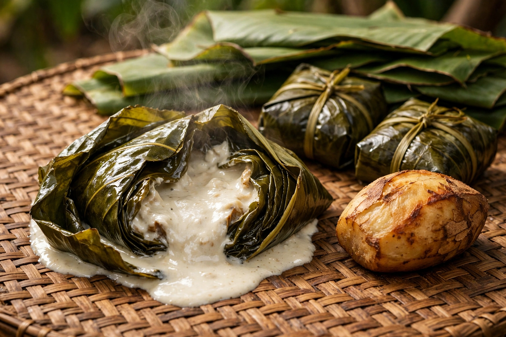
Tonga · Middle East & Oceania · Dish 48 of 50
Taro leaves and beef — Tonga’s most famous dish, from the Sunday ’umu.
Lu pulu means, simply, “taro leaves and beef” — lu is the edible leaf of the taro plant, pulu is beef. It is Tonga’s most famous dish, and it is a story of adaptation: corned beef arrived in the Pacific with trade and colonisation, in tins, and Tongans took it, rinsed off the salt, and folded it into their own ancient way of cooking — taro leaves, coconut cream, and the ’umu, the underground oven of hot volcanic stones. What came out is now synonymous with home.
The making of it is communal. Family members gather to layer four or five young taro leaves, add sliced onion and hunks of corned beef, pour over thick coconut cream, fold the leaves into a tight packet and wrap it in banana leaves, tied with coconut fibre. The parcels go into the ’umu with whole pigs, root crops and fish, are covered with leaves and woven mats, and bake for hours. The ’umu is the cornerstone of Tongan feasts — Sunday meals after church, birthdays, weddings, funerals, every occasion that marks status and belonging. Tonga is a deeply Christian kingdom, and Sunday is the most important day of the week: families return from church to a feast that has been cooking underground all morning, and hymn singing drifts from open windows while the smell of the ’umu hangs in the air.
Lu pulu’s sister dish, lu sipi, swaps the corned beef for lamb. Both are rich, salty and silky — and both depend on the same piece of knowledge as Samoa’s palusami: taro leaves must be cooked long and slow, or their calcium oxalate crystals will sting. Cooked properly, they collapse into velvet.
General food information, not medical advice.
Tonga · The Recipe
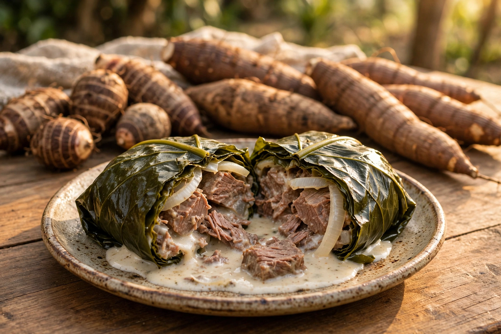
Papua New Guinea · Middle East & Oceania · Dish 49 of 50
A dessert you earn — sago from the palm, banana from the garden, coconut from the tree of life.
Saksak is a dessert made from sago, and sago is a food you earn. It does not come from a shelf; it comes from the belly of a sago palm, hacked open, its pith scraped out, washed, strained and coaxed into starch through hours of labour — work that is still, in the lowlands, a family job. Sago is the core food of the Sepik and the swamp regions, where the river decides who eats and how. Mixed with mashed ripe bananas, shaped into dumplings, wrapped in banana leaves and steamed, then drowned in warm coconut milk, it becomes saksak: chewy, lightly sweet, velvety from the coconut — a pudding that tastes like the rainforest’s version of comfort.
In the Sepik region, sago is also mixed with boiling water into nangu, a gelatinous dumpling eaten as the basic starch of many meals, and pressed onto a hot pan, sometimes with grated coconut, into a tortilla-like pancake. A close cousin, dia, is a sago and banana dumpling steamed in a banana leaf and served with clotted coconut cream. Saksak itself is the sweet one — the treat, the snack, the end of a meal — and it is made in market stalls and home kitchens alike: an older woman wrapping small rectangular packages in banana leaves in a Port Moresby market, the smell of cooked banana and earthy sago in the air, is a memory visitors carry home with them.
The dish is a quiet pact between people and the land that sustains them. Coconut is the island’s lifeline — the tree of life, giving food, shelter, rope and tools. Sago is survival starch. Together, with whatever fruit the village trees surrender that day, they make something that needs no oven, no shop and no money: just a palm, a banana, a coconut and a fire.
General food information, not medical advice.
Papua New Guinea · The Recipe
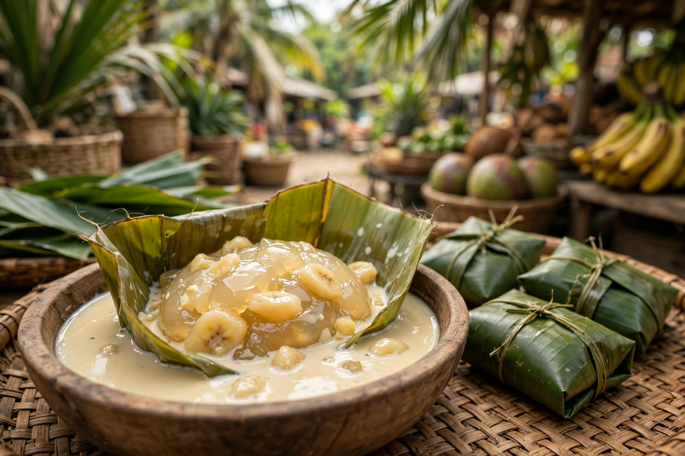
Vanuatu · Middle East & Oceania · Dish 50 of 50
Vanuatu’s national dish — older than the country itself, baked in the earth.
Lap lap is the national dish of Vanuatu, and it is older than the country itself. Indigenous Melanesian people are believed to have prepared it since they first settled these islands more than 3,000 years ago, carrying the tradition of the Lapita seafarers who spread across the Pacific. It is a baked pudding: a starchy root — yam, taro, cassava or green banana — grated into a sticky paste, mixed with coconut milk and salt, wrapped in banana or heliconia leaves, and baked for hours in an earth oven on hot volcanic stones.
The earth oven is the heart of Ni-Vanuatu cooking. A pit is dug, stones are heated in it until they glow, and the wrapped parcels are laid on the hot stones, covered with leaves and earth, and left to cook slowly for several hours. The finished lap lap is dense and chewy, like a savoury pudding, smoky from the stones and rich from the coconut. Every island has its own style: on Malekula there is a technique called sosor, in which a glowing hot volcanic stone is placed in the centre of the unbaked pudding, with chicken wings, onion and tomato on top of the stone. For feasts, a dish called bunia is made the same way — meat, vegetables and coconut milk bundled in banana leaves and steamed with hot stones.
Lap lap is often topped with island cabbage or other leafy greens, and enriched with pork, chicken, fish or even flying fox. A prized variation, tuluk, hides a meat filling at its centre and is reserved for special occasions. At markets and cultural villages, a piece of lap lap sells for a few hundred vatu — it is everyday food and celebration food at once, and it is always made by hand, from the garden, with time. It takes two to three hours to prepare, and it is, as one traveller put it, extremely filling.
General food information, not medical advice.
Vanuatu · The Recipe
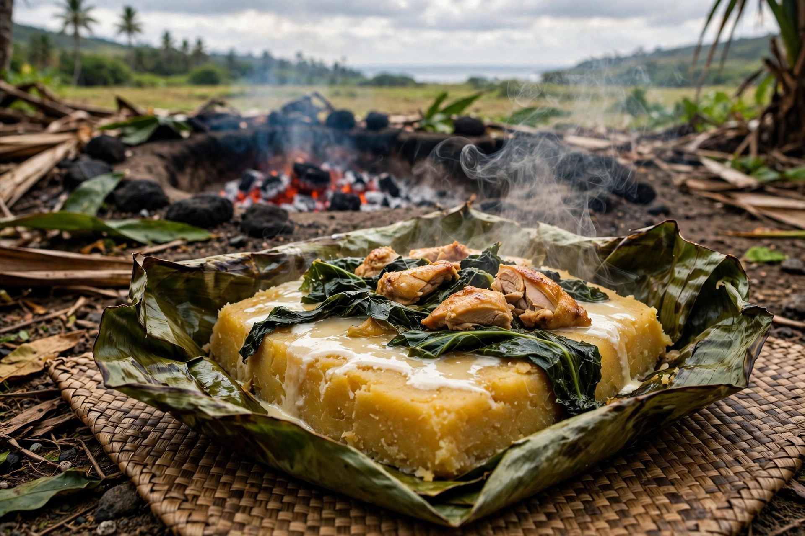
The journey ends — for now
Fifty dishes from fifty countries — every one a dish most people have never heard of, and every one carrying the story of its people.
From steamed fish parcels on the Mekong to a feast buried in the earth of the Andes — this is food as history, as celebration, as identity.
Taste the World · Telling people’s stories through food.
Tap the page edges, swipe, or use your keyboard arrow keys to turn the pages.